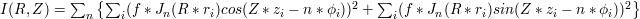

Overview of Analysis Features and Output Files in CAMPARI
Please also note the general and other comments below.
- Polymeric Analyses
- Average radius of gyration (and t), asphericity and acylindricity, end-to-end distance, hydrodynamic radius, ordered Eigenvalues of gyration tensor
Available per analysis group for all non-rigid molecules (see POLYAVG.dat, end-to-end distance also requires at least two residues in molecule) - Average internal scaling behavior
Available per analysis group for all non-rigid molecules (see INTSCAL.dat) - Average radial density profile
Available per analysis group for all non-rigid molecules (see DENSPROF.dat) - Average Kratky profile
Available per analysis group for all non-rigid molecules (see KRATKY.dat) - Simulated averaged fiber diffraction data (preliminary version)
Available system-wide (see DIFFRACTION.dat) - Radius of gyration histogram
Available per analysis group for all non-rigid molecules (see RGHIST.dat) - Histogram of end-to-end distances
Available per analysis group for all non-rigid molecules (see RETEHIST.dat) - 2D-Histogram of radius of gyration and instantaneous asphericity δ
Available per analysis group for all non-rigid molecules (see RDHIST.dat) - Distribution of void spaces
Available system-wide for single polymer simulations (see HOLES.dat) - Instantaneous (running output) of system-averaged polymeric properties
Available system-wide (see POLYMER.dat)
- Average radius of gyration (and t), asphericity and acylindricity, end-to-end distance, hydrodynamic radius, ordered Eigenvalues of gyration tensor
- Topological Analyses
- Bond length distributions
Available per bond (two atoms directly bonded) length (see INTHISTS_BL.dat) - Bond angle distributions
Available per bond angle (across three atoms bonded in direct sequence) (see INTHISTS_BA.dat) - Dihedral angle distributions
Available per dihedral angle (along four atoms bonded in direct sequence) (see INTHISTS_DI.dat) - Improper torsional angle distributions
Available per improper dihedral (central carbon with three atoms directly bonded to it) (see INTHISTS_IM.dat) - Angular correlation function
Available per analysis group for all polypeptide or polynucleotide molecules with at least two complete residues (see PERSISTENCE.dat) - Average turn angles (kinked-ness and handed-ness) along the main chain
Available per analysis group for all polypeptide or polynucleotide molecules with at least two complete residues (see TURNS_RES.dat) - Contact histograms
Available system-wide for all residues of solute molecules (see CONTACT_HISTOGRAMS.dat) - Average contact maps
Available system-wide for all residues of solute molecules (see CONTACTMAP.dat) - Intramolecular distance distributions of amide sites
Available system-wide for polypeptides (see AMIDES_PC.dat)
- Bond length distributions
- Solution, Molecular Structure, and Relative and Global Spatial Analyses
- Pair correlation functions for molecular centers of mass
Available per pairs of analysis groups for all solute molecules (see RBC_PC.dat) - Distance distributions and pair correlation functions of arbitrary sites, both inter- and intramolecularly
Available system-wide per custom request (see GENERAL_PC.dat) - Net molecular cluster statistics
Available system-wide for all solute molecules (molecules tagged as solvent are completely ignored for all cluster analyses; see CLUSTERS.dat) - Molecular cluster statistics
Available per solute molecule (see MOLCLUSTERS.dat) - Histogram of contact order in clusters
Available per cluster size (see COOCLUSTERS.dat) - Global solvent-accessible volume analysis
Available system-wide as instantaneous output along with a running average (see SAV.dat) - Average site-specific solvent-accessible volumes
Available system-wide per atom (see SAV_BY_ATOM.dat) - Distribution functions for site-specific solvent-accessible volumes
Available via user-selection per atom (see SAV_HISTS.dat and SAV.dat) - Average absolute spatial distributions of atomic properties
Available system-wide (see DENSITY.nc)
- Pair correlation functions for molecular centers of mass
- Polypeptide Secondary Structure Analyses
- Secondary structure segment statistics according to dihedral criterion
Available per residue per analysis group for all polypeptides with at least one complete (non-terminal) peptide residue (see BB_SEGMENTS_NORM.dat, BB_SEGMENTS.dat, BB_SEGMENTS_NORM_RES.dat and BB_SEGMENTS_RES.dat) - Secondary structure segment statistics according to hydrogen bonding criterion
Available system-wide if intra- and/or intermolecular hydrogen bonds may be formed (see DSSP.dat, DSSP_NORM.dat, DSSP_NORM_RES.dat and DSSP_RES.dat) - 2D-histogram of global, hydrogen bonding-determined α,β-content
Available system-wide if intra- and/or intermolecular hydrogen bonds may be formed (see DSSP_EH_HIST.dat) - Histograms of global secondary structure (α and β) content via hydrogen bonding criterion and "good"ness of those hydrogen bonds
Available system-wide if intra- and/or intermolecular hydrogen bonds may be formed (see DSSP_HIST.dat) - Running output of DSSP annotation
Available system-wide if intra- and/or intermolecular hydrogen bonds may be formed (see DSSP_RUNNING.dat) - Histograms of global secondary structure (α and β) content order parameters
Available per analysis group for all polypeptides with at least one complete (non-terminal) peptide residue (see ZSEC_HIST.dat) - 2D-Histogram of global α,β-content
Available per analysis group for all polypeptides with at least one complete (non-terminal) peptide residue (see ZAB_2DHIST.dat) - 2D-Histogram of global β-content and t (a proxy for the radius of gyration)
Available per analysis group for all polypeptides with at least one complete (non-terminal) peptide residue (see ZBETA_RG.dat) - Global Ramachandran analysis
Available system-wide for all polypeptides with at least one complete (non-terminal) peptide residue (see RAMACHANDRAN.dat) - Ramachandran analysis
Available by request per residue or per analysis group for all polypeptides with at least one complete (non-terminal) peptide residue (see RESRAMA_xxxxx.dat and MOLRAMA_xxxxx.dat) - Average J(Hα,HN) NMR coupling constants
Available per polypeptide residue excluding glycine, proline, and α-aminoisobutyric acid (see JCOUPLING.dat)
- Secondary structure segment statistics according to dihedral criterion
- Other Analyses and Simulation Output
- Trajectory output
Available system-wide or per user control (see below) - Instantaneous values for the coordinate root mean square deviation to a reference after alignment
Available per user control (see RMSD.dat) - Histograms of particle numbers in grand canonical ensemble simulations
Available per molecule type whose numbers are allowed to fluctuate (see PARTICLENUMHIST.dat) - Average dipole moments
Available per analysis group (molecular) and per residue for all net neutral moieties (see MOLDIPOLES.dat and RESDIPOLES.dat) - Average and instantaneous statistics on energetic overlaps in parallel runs with multiple Hamiltonians
Available system-wide (see N_XXX_OVERLAP.dat and N_XXX_EVEC.dat) - Average swap probabilities and swapping history for parallel runs with replica exchange
Available system-wide (see N_000_PROBABILITIES.dat and N_000_REXTRACE.dat) - Reseeding history for parallel runs with PIGS
Available system-wide (see N_000_PIGSTRACE.dat) - Instantaneous (running output) of titration state of titratable residues
Available per titratable polypeptide residue (see PHTIT.dat) - Instantaneous energies resolved by individual contributions to the Hamiltonian
Available system-wide (see ENERGY.dat) - Instantaneous ensemble variables in dynamics calculations
Available system-wide in dynamics or hybrid calculations (see ENSEMBLE.dat) - Instantaneous totals for accepted Monte Carlo moves resolved by move type
Available system-wide in Monte Carlo calculations (see ACCEPTANCE.dat) - Instantaneous values or Fourier terms for dihedral angles around rotatable bonds
Available system-wide or resolved by analysis group (see FYC.dat and TRCV_xxx.tmp) - Extracted features for structural clustering
Available system-wide (see CLUSTERING_FEATURES.nc) - Results from structural clustering (post-processing)
Available system-wide (see STRUCT_CLUSTERING.clu, STRUCT_CLUSTERING.graphml, and TMAT_xxxxxx_yyy.dat) - Results from the progress index method (post-processing)
Available system-wide (see PROGIDX_xxxxxxxxxxxx.dat and FRAMES_NBL.nc) - Network analyses derived from structural clustering (post-processing)
Available system-wide (see {basename}_yyy.fwts, EIGEN_xxx.dat, PFOLD_PLUS_xxx.dat, PFOLD_MINUS_xxx.dat, MFPT_yyy_CFEP_xxxxxxxx.dat, PFOLD_PLUS_yyy_CFEP_xxxxxxxx.dat, PFOLD_MINUS_yyy_CFEP_xxxxxxxx.dat, and MSM_SYN_TRAJ_xxxxx_yyy.frames) - Principal component (PCA) analysis (post-processing)
Available system-wide (see PRINCIPAL_COMPONENTS.evs and PRINCIPAL_COMPONENTS.dat) - Histogram outputs for Wang-Landau sampling runs
Available system-wide (see WANGLANDAU_G.dat, WANGLANDAU_GH.dat, and temporary histogram output) - Weights for snapshot-based reweighting for energy landscape sculpting runs
Available system-wide (see ELS_WFRAMES.dat)
- Trajectory output
- Other Files
- Visualization scripts (VMD)
Available system-wide (see {basename}_VIS.vmd, DIPOLE_GROUPS.vmd, MONOPOLES.vmd, FOS_GROUPS.vmd, and STRUCT_CLUSTERING.vmd) - Index lists
Available system-wide (see INTERNAL_COORDS.idx, TABULATED_POT.idx, and GENERAL_PC.idx) - Complete input file for torsional bias potential based on simplified input mode
Available system-wide (see SAMPLE_TORFILE.dat) - Transform of input spatial density
Available system-wide (see DENSITY_INPUT_PHYS.nc) - Wisdom file for DDFTs by FFTW
Available system-wide (not documented further, see FMCSC_EWWISDOMFILE) - Log output for shared memory parallelization
Available system-wide (see THREADS.log) - High precision simulation restart files
Available system-wide (see {basename}_1.rst and {basename}_2.rst) - Initial and final structure files
Available system-wide (see {basename}_START.int, {basename}_START.pdb, {basename}_END.int, and {basename}_END.pdb)
- Visualization scripts (VMD)
Individual Descriptions of Output Files:
GENERAL COMMENTS:
The output that CAMPARI generates is fit into different hierarchical constructs. For instance, trajectory information is instantaneous and provided for each atom in the system individually. Analyses which are performed on-the-fly (i.e., concurrently with a running simulation) will often pool data for cases in which the tagging of individual particles of identical type would be statistically meaningless due to them being freely permutable. The user may control this behavior primarily through the concept of analysis groups. Furthermore, not all output is meaningful (and may be expensive to obtain) for small molecules which may be considered solvent rather than solutes. Some analyses respect tagging specific analysis groups as solvent and others as solutes. Below, the descriptions of output files is given in no particular order except that closely related output files will appear immediately after one another. Is is recommended to navigate back to the top of the page and use the links in the overview section.NOTE ON UNITS:
The implied units should be stated explicitly for most output files. To minimize errors in human porting and adapting of parameters, and to comply with established standards (such as the PDB-standard), simulation software will often try to work in units that yield numbers that do not require very large or very small exponents. CAMPARI's internal units are kcal/mol for energy, Å for length, degrees for angles (although occasionally radian are used), the elementary charge for charges, K for temperature, g/mol for mass, and ps for time.IMPORTANT COMMENT FOR PARALLEL RUNS:
The inner level of parallelism in CAMPARI, i.e., the shared memory (OpenMP) parallelization produces only one output file that is specific to it. Everything else should look exactly the same as it would in a run with OpenMP disabled. The outer layer of parallelism in CAMPARI is the option to simulate or analyze several copies of the system, which is driven by MPI. In those multi-replica parallel computations, in which the information for each node is collected separately, all output files will have the node specific prefix "N_xxx_", where xxx is the node's rank (integer with leading zeros). This allows a single working directory for the whole job (presumably then running on a network-mounted directory, although this is of course not necessary). In addition "N_xxx.log" is an automatic log-file (created only in MPI runs) to avoid congestion of the standard output stream used in serial runs. In multi-replica parallel computations, in which the information coming from the nodes is centrally collected, only a few files have the same prefix (the log-file, the restart file, as well as the initial and final .pdb/.int-files). Note that the prefix always uses at least 3 digits to represent replica numbers but that more digits are used if necessary. For all other files see comments below.IMPORTANT COMMENT FOR DYNAMICS RUNS:
In runs using a dynamics integrator for sampling, some of the output is shifted by one step relative to other quantities. The reason is the following: In a single integration step, the energy of the current structure is computed first. The structure is then advanced as guided by the acting accelerations and velocities for individual degrees of freedom. At the end of the step all analysis routines are performed on the new structural information. However, potential energies pertaining to the previous structure are printed out leading to a mismatch of one step (this is in addition to the standard leapfrog mismatch of velocity- and structure-dependent quantities).THREADS.log
If the shared memory (OpenMP) parallelization of CAMPARI is in use, this file can contain information about how the total work load is distributed across threads. The amount of information provided is controlled by keyword FMCSC_THREADS_VERBOSE. In general, the output can contain the following pieces of information:
- Timing information and expected finishing time (this is usually misleading in hybrid runs). The setting for FMCSC_FLUSHTIME determines how often this is reported.
- Fixed bounds (atoms, residues, molecules) for work load distribution across threads.
- Final dynamic bounds after load balancing for work load distribution across threads. Settings for keywords FMCSC_THREADS_DLB_FREQ, FMCSC_THREADS_DLB_STOP, and FMCSC_THREADS_DLB_EXT matter for this output.
- Imbalance measures for dynamic load balancing (see previous item for associated keywords).
In MPI calculations, this file is produced independently by all replicas using the standard prefix if the calculation uses the hybrid OpenMP/MPI-parallel executable. Note that timing information and load balancing are obtained independently for all MPI processes and do not account for possible communication or synchronization delays incurred by MPI.
{basename}_1.rst
{basename}_2.rst
The restart file: it is an ASCII-file containing high precision information on the system. To be properly read, it requires the exact same sequence file the original run was run with (see FMCSC_RESTART). The format assumptions the code makes are very strict, so segmentation faults due to formatted read are not uncommon in case the user creates a mismatch between restart file and attempted calculation (i.e., changes the sequence).
Note that the two files are (over)written in alternating fashion. This is to avoid cases where the restart file is ultimately destroyed due to a system error killing the simulation during the writing step. For read-in purposes, the appropriate version of the file needs to be renamed to {basename}.rst. The units are the CAMPARI internal ones (see above).
{basename}_START.int
{basename}_START.pdb
A Cartesian coordinate file in pdb-format and a Z-matrix file in TINKER-format of the initial configuration as built by CAMPARI (random, read-in or regular-extended), mostly for validation purposes. Note that the output pdb file can be adjusted in formatting by keywords FMCSC_PDB_NUCMODE (for atom partitioning in DNA/RNA), FMCSC_PDB_W_CONV (for atom and residue names and treatment of polypeptide caps), and FMCSC_PDB_OUTPUTSTRING (for field widths). Modifications to the latter will generally make the resultant pdb files incompatible with visualization software or other tools.
A few notes on the Z-matrix format:
- The header line gives the number of atoms found subsequently.
- The first column runs through the atom indices.
- The last seven columns give reference indices (always backward) and Z-matrix variables (bond length, bond angle, dihedral angle or second bond angle), and the chirality indicator.
- The data in between (two or three columns) are an element identifier, an (optional) naming aid for annotated output, and the atom type as defined in the parameter file in use (see keyword PARAMETERS).
- If the system contains multiple molecules, the Z-matrix is broken into pieces, i.e., the first three atoms of every(!) molecule do not have the full number of reference atoms. Note that this means that these .int-files do not fully describe the system (as the rigid-body coordinates of the individual molecules are not contained).
{basename}_END.int
{basename}_END.pdb
Both a Z-matrix file and a Cartesian file in pdb-format for the final configuration obtained through the simulation. This is again mainly for validation purposes. Note, however that both {basename}_END.pdb and {basename}_START.pdb are used in {basename}_VIS.vmd and are expected to be pdb files conforming to the standard, i.e., the script file will not work properly if both of these files are absent or if the pdb output format was altered. The pdb files provide the template for reading in the trajectory file. Of course, {basename}_VIS.vmd can be manually edited to use an alternative template file provided independently. See above for notes on the Z-matrix format.
Trajectory output
Note that all trajectory output (whichever format it is obtained in) can be comfortably read in and visualized by the (free) visualization software VMD utilizing the automatically generated scripts the code provides → {basename}_VIS.vmd. In all cases, the keyword FMCSC_XYZOUT controls writing frequency and the assumed unit of length is Å.
Also note that in MPI averaging mode, trajectory output may cycle through the nodes, i.e., if the frequency is set to 10, and the universe is of size 4, then after steps 10, 50, 90, ... a file or entry is written based on the structure the first node (master) has, after 20, 60, 100, ... steps a file or entry is written based on the second node (first slave) and so on. This mode is selected by setting keyword FMCSC_MPIAVG_XYZ to zero. The advantage is that data spanning the entire parallel collection of individual simulations are obtained in a single file with the downside of some logistic overhead associated with re-extracting individual and continuous trajectories from said file. If FMCSC_MPIAVG_XYZ is not set to zero explicitly, each replica will produce its own trajectory file as is always the case in replica exchange (RE) runs. The cyclical output described above applies universally to most other output files producing instantaneous output (such as ENERGY.dat) in MPI averaging calculations.
The general rule for trajectory output is that the entirety of the system is stored. In case of periodic boundary conditions, the convention is that the geometric centers (or centers of mass) of all molecules always reside inside the central unit cell. Most of this behavior can be controlled by auxiliary keywords FMCSC_XYZ_SOLVENT, FMCSC_XYZ_FORCEBOX, FMCSC_XYZ_REFMOL, FMCSC_ALIGNCALC, and FMCSC_TRAJIDXFILE.
Furthermore, in trajectory analysis runs using frame weights, trajectories that are being rewritten (for example to change format, or to extract specific frames) do not represent the supplied weights in any way.
Lastly note that in (S)GMC calculations physical presence is indicated by coordinate offsets in the z-direction (for output only). Since the reserve particle bath molecules exist throughout and since very few visualization programs deal with changing topologies from snapshot to snapshot, CAMPARI provides the (mostly meaningless) coordinates of bath molecules misplaced by one or several box sizes in the positive z-direction. Such trajectories may be visualized using the automatic scripts and allow for easy and intuitive visual analysis of (S)GMC runs (see {basename}_VIS.vmd).
{basename}_xxxxx.arc
These are TINKER format snapshots continuously numbered in xxxxx which are readable by appropriate visualization software like VMD.
{basename}_xxxxx.pdb
These are pdb-snapshots just like xyz-ones. PDB-files have a rigid (and unfortunately somewhat flawed) format but are heavily annotated, i.e., allow for successful parsing even if atoms (such as hydrogens) are missing or if atom orders are different between different software packages. For larger software cross-compatibility, the keywords FMCSC_PDB_W_CONV and FMCSC_PDB_NUCMODE can be used to determine some details of how pdb-files are annotated. Conversely, keyword FMCSC_PDB_OUTPUTSTRING can be used to create a non-standard pdb format that corrects the aforementioned flaws such as the limited field widths for coordinate precision or atom index.
{basename}_traj.pdb
Single files are tedious but the pdb-format does not possess a natural facility to represent trajectories. The most common workaround is to annotate individual snapshots as different models (using MODEL/ENDMDL syntax) as is done for structural ensembles determined by NMR. This is also the solution chosen here. Note that the file size of pdb- and xyz-files is generally large due to the ASCII-format and the annotations.
{basename}_traj.xtc
The code allows to output the coordinates in three different binary formats, .xtc (employed for example by GROMACS), .dcd (employed for example by CHARMM and NAMD) and the general binary NetCDF format (.nc) developed by Unidata and employed for example by AMBER since version 9 → FMCSC_XYZPDB. The xtc-format is most compact but requires linking to an external library. Similarly, the NetCDF format is most versatile but also requires linking against a (much more) extensive library (see INSTALL).
{basename}_traj.dcd
See {basename}_traj.xtc. The binary .dcd trajectory file.
{basename}_traj.nc
See {basename}_traj.xtc. The binary .nc trajectory file.
{basename}_VIS.vmd
This output file is a TCL script for the freely available and widely used molecular visualization software VMD. It allows a quick visualization of the trajectory and can be easily customized to allow variations on the defaults. On a LINUX command line it is run as "vmd -e {basename}_VIS.vmd". It offers the following functionality:
- Automatic
loading of the trajectory (whichever format) and setup of typical
representations
- Visualization of boundary graphics (a
transparent sphere/cylinder or lines for rectangular cuboids, available
dependent on setting for keyword FMCSC_SHAPE):
→ droplets: "see_box radius o1 o2 o3 res." Here, radius is the sphere's radius, the vector o1,o2,o3 defines the center, and res is the resolution of display (proportional to the number of polygons used for rendering).
→ boxes: "see_box l1 l2 l3 a1 a2 a3 o1 o2 o3." Here, l1,l2,l3 is the vector of unit cell side lengths, a1,a2,a3 is the vector of unit cell angles, and o1,o2,o3 is the vector pointing to the lower left corner.
→ cylinders: "see_box radius height o1 o2 o3 res." Here, radius and height are the cylinder's radius and height, the vector o1,o2,o3 defines the vector pointing to the center of the bottom circular cross-section, and res is the resolution of display (proportional to the number of polygons used for rendering).
- Automatic visualization of simulation boundary:
→ NVT/NVE simulations: "see_system molecule", "hide_system molecule." Here, molecule is the ID number of the molecule (typically 0). Note that the dimensions of the system are written to the script-file directly, and not pulled from the trajectory file itself.
→ NPT/NPH simulations: "see_system molecule", "hide_system molecule" Analogous, only that the dimensions of the system are pulled from the trajectory file itself and vary from frame to frame (not that this is not available for xtc-trajectories as the VMD plugin currently does not re-read unit cell variables for every frame).
→ μVT simulations: "see_system molecule", "see_bath molecule", "see_all molecule", hide_system molecule", ... In case of grand canonical or semi-grand canonical simulations, the bath particles are output into the trajectory file, but shifted in the positive z-direction by two periodic images (two diameters in case of droplets). The functions above will selectively activate or deactivate representations associated with either the bath or the (real) system. In contrast to fixed N-ensembles, the visualization of system boundaries is turned on by default. This is to make the concurrent output of bath and real system less confusing. - Simplified alignment procedure:
→ "align_it selection_string reference_molecule reference_frame molecule." Here, the selection_string defines a VMD-style selection of atoms (as you would use for a representation), reference_molecule and reference_frame are the reference IDs for the molecule and frame to serve as the alignment target, and molecule is the ID number of the molecule to be aligned (and which can of course be identical to reference_molecule). Note that the alignment procedure shifts and rotates the actual coordinates thereby rendering the display of system boundaries meaningless (as those are defined in absolute coordinates). - Automated RMSD calculations:
→ "rmsd_it filename selection_string reference_molecule reference_frame molecule." This is very similar to the alignment routine. The resultant RMSD for all frames of the chosen molecule will be written to the file "filename". Note that RMSDs are extensive quantities which scale with the size of the chosen reference. see above for compatibility with system boundary display. All the above functions are TCL procedures defined in this output file, and therefore available upon parsing the script. They are used by simply typing the desired command in the VMD console window. All options to the procedures have defaults, so it might not always be necessary to supply every one of them.
RMSD.dat
Instantaneous values of the coordinate root mean square deviation (RMSD) after alignment in Å
Format: f13.5 or f13.5,1x,f13.5
There are either one ot two columns, which hold coordinate RMSD values computed after alignment. The alignment set is a user-defined subset. The first column is always the RMSD computed only over the set of atoms used for alignment. As by standard convention, normalization of the MSD is with respect to the number of atoms in the set. The reference coordinates are either a user-supplied reference structure or the preceding trajectory snapshot being considered for this purpose. The second column is optional and written only if the user also requested an additional set of atoms. In this case, the value in the second column is the RMSD across this additional set of atoms given the same alignment. A separate distance set, which should of course differ from the alignment set, can be used, for example, to understand the extent of relativ motion between a structurally well-defined reference (e.g., a protein) and a coupled entity (e.g., a bound ligand).
This functionality is only available in trajectory analysis runs. Note that the functions defined in the visualization scripts offer easier control over the coordinate subsets to use.
When using frame weights, this instantaneous output file does not utilize the weights in any way.
ENERGY.dat
Instantaneous values of individual energy terms in kcal/mol
Format: i12,1x,22(g14.7,1x)
Columns are as follows:
- Step number
- Total energy
- Excluded volume potential
- Structural correction terms
- Dispersive interaction term
- ABSINTH direct mean-field interaction
- Weeks-Chandler-Andersen potential
- Polar (electrostatic) potential terms
- Torsional bias terms
- Global secondary structure bias terms
- Tabulated potentials
- Harmonic distance restraint terms
- Compartmentalization potential terms
- Soft-wall boundary potential
- Sum of all bias terms incurred by energy landscape sculpting
- Polymeric biasing term
- Bond stretching term
- Angle bending term
- Improper dihedral term
- Torsional term
- DSSP restraint term
- CMAP term
- Spatial density restraint term
In trajectory analysis runs using frame weights, this instantaneous output file does not utilize the weights in any way.
In (S)GMC calculations, energy outputs represent combined totals from both present and non-present molecules.
ENSEMBLE.dat
Instantaneous values of various global ensemble metrics
Format: i12,1x,X(g14.7,1x)
What is written out depends on the ensemble that is simulated (see FMCSC_ENSEMBLE). Currently, only the NVT and NVE ensembles are supported, for which the following instantaneous quantities are printed (the last two columns are restricted to internal coordinate space dynamics):
Step number, potential energy, kinetic energy, total energy (kinetic + potential), temperature, Gauss measure, (Cartesian kinetic energy, sum of potential energy and Cartesian kinetic energy)
In general, leap-frog integrators as used in CAMPARI obtain velocities (kinetic energy, temperature) and positions (potential energy) at points shifted by half the integration time step. Therefore, in ENSEMBLE.dat, potential energies are usually lagging relative to all other output, i.e., they are for the previous structure (not the one written to the trajectory-file) given the reported step number. The only exception to this are replica exchange moves. Here, when a new structure is swapped in, both the potential energy is updated to the new structure, with its corresponding (now lagging) velocities. This leads to the signature that consecutive steps have the exact same potential energy, since for the next normal integration step the same (now lagging) potential energy is reported. All energies are given in kcal/mol, and temperature is reported in K. The Gauss measure is the sum over all atoms of the squares of all forces acting on that atom that are not due to interaction potentials divided by the atom's mass:
Z = Σ mi ( d2ri / dt2 - fi/ mi)2
Here, the ri and fi are the atom's position and "proper" force vectors. Z measures a least squares difference between the unconstrained motion under the influence of interaction forces and the actual motion constrained by ensemble and/or geometric considerations. Consequently, it should only be zero for constraint-free simulations in the microcanonical ensemble. For cases with any type of constraint the quantity is typically not easily interpretable since the value for Z scales with the net strength of the "proper" forces acting on all particles. To reiterate, "proper" forces are those accounted for by the potential energy, whereas constraint forces are introduced by geometric constraints, thermostats, etc. and do not appear elsewhere. The value for Z is reported in gmol-1Å2ps-4.
Aside from these general comments, dynamics runs in internal coordinate space offer two additional columns using the Cartesian kinetic energy. Predominantly, these runs report the kinetic energy (column 3) in the assumed diagonal mass matrix approximation, i.e., T = 0.5 ω M ω, where M is the matrix with rotational inertia and net molecular masses for angular and linear degrees of freedom on its diagonal, respectively, and ω is the composite vector of angular and linear velocities. For cases with a nondiagonal mass matrix (i.e., everything except rigid molecules with spherical symmetry), this is an approximation to the kinetic energy computed as T = Σ 0.5 mi vi2. Therefore, the last two columns give complementary information using these numbers. Note that the Cartesian velocities are not available directly, but must either be obtained via finite differencing or are (as done here) computed by a recursive formalism from the angular and linear velocities of the internal coordinate description.
In MPI averaging mode these are always cycling instantaneous values (as described for structural output).
Note that this output file is not written in any type of trajectory analysis run or for runs that exclusively use Monte Carlo sampling.
ACCEPTANCE.dat
Current totals of accepted Monte Carlo (MC) moves of different types
Format: i12,1x,20(i11)
Step number, accepted FYC-moves, accepted FY moves, accepted ω-moves, accepted exact torsional CR moves without ω-sampling, accepted exact torsional CR moves with ω-sampling, accepted inexact torsional CR moves, accepted exact torsional CR moves with bond angle sampling, accepted sidechain moves, accepted nucleic acid pivot moves, accepted five-ring pucker moves (polynucleotides and polypeptides), accepted exact torsional CR moves for polynucleotides, accepted single molecule rigid-body moves, accepted single molecule rotations, accepted single molecule translations, accepted cluster rigid-body moves, accepted molecule insertion moves, accepted molecule deletion moves, accepted molecule type permutation moves (→ GC moves), accepted replica exchange moves, accepted single torsion pivot moves (any type)
The replica exchange moves are counted such that if the single replica is getting a new structure at the end of the swap cycle, the counter is incremented by one (i.e., one is the maximum number of accepted RE moves per RE cycle (whose frequency is determined by FMCSC_REFREQ)). Note that for REMD calculations (see FMCSC_DYNAMICS), accepted replica exchange moves are only reported at the end in the log-file for each node.
In MPI averaging mode, these are always net totals over all nodes. This is because the statistics for accepted moves do not observe well-defined fluctuations. Information for individual nodes is partially available through the residue- and molecule-resolved acceptance counts written to the log file.
In (S)GMC calculations, information stemming from both present and nonpresent molecules is provided.
Note that this output file is not written in any type of trajectory analysis run or in runs that do not employ Monte Carlo sampling at all.
PARTICLENUMHIST.dat
Histograms of particle counts for physically present molecules during runs in grand canonical or related ensembles
Format: (Nt+1)(i8) with Nt being the number of fluctuating particle types
This output file lists number histograms in (S)GMC calculations for particle types allowed to fluctuate (i.e., those coupled to the chemostat). The first line is a header line with the integer indices of the molecule types reported upon in the respective columns (and "N" for the number column). It has Nmax+2 rows where Nmax is the largest number of physically present molecules of any given type during the simulation. The second row corresponds to the histogram count for no particles of that type being present and so on up to Nmax molecules being present. The actual particle number for each row is given in the first column. Note that for a sane (S)GMC calculation, the limits Npresent→0 or Npresent→Nreserve should not be encountered. Aside from log-outputs and eventual simulation terminations, this output file can help determine such exceptions. These data are necessary to extract the sampled bulk concentration for each fluctuating type.
SAMPLE_TORFILE.dat
Sample input file for torsional bias potential
Format: See description of input file format
This output file is created if the torsional bias potential is in use and if keyword FMCSC_TORREPORT is enabled. It then proceeds to write its processed input in a residue-based format to this output file. If the original input itself was also residue-based using only the explicit modes (1 and 2), in which all parameters are specified explicitly, this is strictly redundant. The use of this output file is to preserve the settings derived from a simplified input format for later use. Specifically, if torsional bias minimum positions were inferred from structural input, this information is typically lost later on, for example upon a restart of the simulation of upon changing the structural input file. It is therefore always recommended to use this option to preserve the exact settings for the torsional bias potential.
In MPI calculations, this file is produced independently by all replicas using the standard prefix. This is normally redundant but can be important when using keyword FMCSC_PDB_MPIMANY.
POLYMER.dat
Instantaneous measures of system size and shape
Format: i12,2x,g14.7,1x,f12.5,1x,f12.5,1x,f12.5,1x,f12.5,1x,g14.7,1x,g14.7,1x,g14.7
This file contains instantaneous system-wide polymer properties that are primarily useful as an estimator for the quality of sampling: step number, radius of gyration (Rg) in Å, t, asphericity, acylindricity, δinst, λ1, λ2, λ3. The λi are the sorted (largest first) eigenvalues of the system's gyration tensor (in Å2), for the rest see below. Note that values obtained in periodic boundary conditions may be misleading.
Definitions:
t = <f1·(f2·(Rg/Lc))f3/N0.33>
Here, the fi are arbitrary factors meant to keep the parameter within the interval [0,1] (values are 2.5, 1.75 and 4.0). N is the system's total number of residues and Lc its estimated contour length in Å.
Asphericity = (1/Rg2) · [λ1 - 0.5·(λ2 + λ3)]
Acylindricity = (1/Rg2) · [λ2 - λ3]
δinst = 1.0 - 3.0·(λ1·λ2 + λ2·λ3 + λ1·λ3)/(λ1 + λ2 + λ3)2
In MPI averaging these values come from a different node at each step producing output, and they cycle in just the same fashion as described for structural output (i.e., node 3 in an universe of size 5 could be found in rows 3,8,13,18,....).
In trajectory analysis runs using frame weights, this instantaneous output file does not utilize the weights in any way.
In (S)GMC calculations, only physically present polypeptides are considered for analysis.
POLYAVG.dat
Various averages quantifying size and shape of the molecules in each analysis group
Format: 12(g14.7,1x)
This file is resolved by analysis group and preceding the actual data line there is a descriptive line giving the number of the analysis group (as initially reported by CAMPARI), the reference molecule, and the residues comprising that reference molecule.
The data line gives the ensemble-averaged polymer properties for all the molecules belonging to that analysis group. They are all locally (molecule-wise) defined and hence true descriptors of sizes and shapes of the types of polymer chains in the system: radius of gyration (<Rg>) in Å, <Rg2> in Å2, t, asphericity, acylindricity, δ*, δ, end-to-end distance in Å, (estimated) hydrodynamic radius <Rh> in Å, <λ1>, <λ2>, <λ3>. For end-to-end distances see description in RETEHIST.dat, the λi are the sorted (largest first) eigenvalues of the gyration tensor (in Å2), for the rest see below.
Definitions:
t = <f1·(f2·(Rg/Lc))f3/N0.33>
Here, the fi are arbitrary factors meant to keep the parameter within the interval [0,1] for a large variety of molecular sizes and shapes (values are 2.5, 1.75 and 4.0). N is the molecule's chain length in number of residues and Lc its estimated contour length in Å. The parameter t is meant to provide a crude "normalization" for Rg which works across multiple polymeric domains.
Asphericity = <[λ1 - 0.5·(λ2 + λ3)]/<Rg2>> = (1/<Rg2>) · [λ1 - 0.5·(<λ2> + <λ3>)]
Acylindricity = (1/<Rg2>) · [<λ2> - <λ3>]
δ = 1.0 - 3.0·<λ1·λ2 + λ2·λ3 + λ1·λ3>/<(λ1 + λ2 + λ3)2>
δ* = 1.0 - 3.0·<(λ1·λ2 + λ2·λ3 + λ1·λ3)/(λ1 + λ2 + λ3)2>
Rh = (1.0/Nd) · <1.0/Σi<j rij >-1
Here, Nd is the total number of pairwise atom-atom distances in the molecule of interest.
In MPI averaging runs, these data are averaged over all nodes.
In (S)GC ensemble calculations, the data are only obtained over physically present molecules.
RETEHIST.dat
Histograms of end-to-end distances in Å for different analysis groups
Format: f12.5,1x,N(g14.7,1x), where N is the number of relevant analysis groups in the system, i.e., those which are composed of at least two residues and have proper internal degrees of freedom.
Row 1 is a header line, which has all the analysis group numbers (as initially reported by CAMPARI) in columns 2 through N+1. The first column gives the bin-center for the end-to-end to distance in Å and the remaining columns give the normalized counts for the N analysis groups. The resolution for this is controlled by the keyword FMCSC_RGBINSIZE. For polypeptides, the exact definition of the end is the CA-atom (or analog) on the terminal residues, whereas for polynucleotides it is the P on the 5'-residue, and the C3* on the 3'-terminal sugar.
In MPI averaging this is collected over all nodes.
In (S)GMC calculations, only physically present polypeptides are considered for analysis.
RGHIST.dat
Histograms of absolute values of the radii of gyration in Å for different analysis groups
Format: f12.5,1x,N(g14.7,1x), where N is the number of relevant analysis groups in the system, i.e., those which have any internal degrees of freedom.
Row 1 is a header line, which has all the analysis group numbers (as initially reported by CAMPARI) in columns 2 through N+1. The first column gives the bin centers in Å for the radius of gyration axis and the remaining columns give the normalized counts for the N analysis groups. The resolution for this is controlled by the keyword FMCSC_RGBINSIZE.
In MPI averaging this is collected over all nodes.
In (S)GMC calculations, only physically present polypeptides are considered for analysis.
RDHIST.dat
Two-dimensional histograms of the parameter t (related to radius of gyration) versus asphericity δ* (see POLYAVG.dat for details and definitions). These data are resolved by analysis group.
Due to the (quasi-)normalized nature of both order parameters, these matrices are of fixed size, i.e., 100 lines of 100(g14.7,1x), and are separated by comment lines giving information about the analysis group the matrix below refers to.
The size parameter t varies with columns, while δ* changes with rows. Both axes have values 0.005:0.015,....0.995 as bin centers. The data are normalized counts over the whole two-dimensional space. The computation frequency for this is regulated by FMCSC_POLCALC.
In MPI averaging mode this is averaged automatically over all nodes.
In (S)GMC calculations, only physically present polypeptides are considered for analysis.
DENSPROF.dat
The average chain density as a function of distance from the center of mass (radial density profile)
Format: f12.5,1x,N(g14.7,1x), where N is the number of relevant analysis groups in the system (i.e., those which have internal degrees of freedom).
Row 1 is a header line, which has all the molecule type numbers in columns 2 through N+1.
The first column gives the bin centers for the distance from the center of mass and the remaining columns give the averaged densities (in g·cm-3) for the N analysis groups. The resolution for this is currently controlled by the keyword FMCSC_RGBINSIZE (sub-optimal, might change in the future).
In MPI averaging this is collected over all nodes.
In (S)GMC calculations, only physically present polypeptides are considered for analysis.
RAMACHANDRAN.dat
(N+1) rows giving the system-wide, normalized, two-dimensional histogram of polypeptide backbone φ/ψ-angles
Format: (N+1)(g12.5,1x), where N = 360.0°/FMCSC_ANGRES (finest possible resolution is at 1.0°)
This is the two-dimensional backbone dihedral distribution averaged over all residues in the system which have peptide backbone torsions (note that this automatically excludes all terminal residues). Note that if 360.0° is an exact multiple of FMCSC_ANGRES an extra (unused) bin is produced (hence N+1), and that in case 360.0° is not an exact multiple of FMCSC_ANGRES bin-sizes at the margins may be altered.
In MPI averaging mode this is collected over all nodes.
In (S)GMC calculations, only physically present polypeptides are considered for analysis.
RESRAMA_xxxxx.dat
Just like RAMACHANDRAN.dat, only for the specific residue xxxxx.
MOLRAMA_xxxxx.dat
Just like RAMACHANDRAN.dat, only for the specific analysis group xxxxx (as initially reported by CAMPARI).
INTERNAL_COORDS.idx
A list of entries in four blocks (although not all blocks will always be written: see FMCSC_WHICHINT). If all four are present, the first block corresponds to bond lengths, the second one to bond angles, the third to improper dihedral angles, and the fourth to proper dihedral angles.
First block (format: i6,':',1x,2(a4,' '),1x,'(',2(i7,' '),'): ',g12.5).
The first integer is the column this entry can be found in the output file INTHISTS_BL.dat. The two character strings give the biotype names of the two atoms forming the bond, the two following integers their atom number, and the last number the starting value in Å (which is highly relevant for interpreting the output in INTHISTS_BL.dat).
The second block (format: i6,':',1x,3(a4,' '),1x,'(',3(i7,' '),'): ',g12.5).
This is analogous to the first block, only that three biotype names and three atom numbers are given. The central atom is always the central one in forming the bond angle between the three. The starting (default) value for the angle is given in degrees ([0:180]).
Third block (format: i6,':',1x,4(a4,' '),1x,'(',4(i7,' '),'): ',g12.5).
Again analogous, only that four biotype names and atom numbers are given. The first atom listed is always the one at the planar center (typically an sp2 carbon). The second one is the one defining the axis around which the pseudo-(=improper)torsion is set up. The rules for defining the hierarchy of the three covalently bound atoms are outlined elsewhere (see corresponding documentation). Improper dihedral angles are at least conceptually circular quantities defined in CAMPARI over the interval [-180:180]. In theory they can also be used to describe chirality at tetrahedral centers as well, but CAMPARI does not currently support that. Therefore, the starting value for most improper dihedral angles will typically be 180.0° or -180.0° (depending on rounding).
Fourth block (format: i6,':',1x,4(a4,' '),1x,'(',4(i7,' '),')')
The only formal difference to the section on improper dihedral angles is the missing starting value (see INTHISTS_DI.dat for details). For proper dihedral angles, atoms are listed in order, i.e., atoms 2 and 3 define the rotatable bond, around which the angle of atom 4 with respect to atom 1 is evaluated. Torsional angles are circular quantities defined in CAMPARI over the interval [-180:180]°.
INTHISTS_BL.dat
Bond length histograms (Å).
Format: X(g12.5) where X is the number of columns which can be gathered from INTERNAL_COORDS.idx and each column corresponds to a topologically defined bond length
Each histogram is setup in the following way. There are 101 total bins (rows) with a (currently fixed and hard-coded) bin-size of 0.01Å. The 51st bin extends from (r0 - 0.005)Å to (r0 + 0.005)Å. Here, r0 is the starting value for that particular bond length term (as found in INTERNAL_COORDS.idx). This setup is to ensure that different bond lengths (generally ranging from 1-2Å for biomolecules) are adequately supported without sacrificing detailed resolution, as fluctuations in bond lengths are generally expected to be relatively small. In case of out-of-range values, terminal bins (1 or 101) are overstocked. This allows to at least recognize that range exceptions have occurred.
In MPI averaging mode this is collected over all nodes.
In (S)GMC calculations, only physically present molecules are considered for analysis.
INTHISTS_BA.dat
Bond angle histograms (°).
Format: X(g12.5) where X is the number of columns which can be gathered from INTERNAL_COORDS.idx and each column corresponds to a topologically defined bond angle
This output file is highly analogous to INTHISTS_BL.dat. For each histogram, there are 101 total bins with a (currently fixed and hard-coded) bin-size of 1°. The 51st bin extends from (a0 - 0.5)° to (a0 + 0.5)°. Here, a0 is the starting value for that particular bond angle term (as found in INTERNAL_COORDS.idx). This setup is to ensure that different bond angles (generally ranging from 90-150° for biomolecules) are adequately supported without sacrificing detailed resolution. Note that angles are restricted to the interval [0:180]° and that the program might become unstable anyway in case sufficiently collinear atoms, i.e., bond angles near those limits, are encountered. Range exceptions are dealt with analogously to INTHISTS_BL.dat.
In MPI averaging mode this is collected over all nodes.
In (S)GMC calculations, only physically present molecules are considered for analysis.
INTHISTS_IM.dat
Improper dihedral angle histograms (°).
Format: X(g12.5) where X is the number of columns which can be gathered from INTERNAL_COORDS.idx and each column corresponds to a topologically defined improper dihedral angle
This output file is analogous to INTHISTS_BL.dat. For each histogram, there are 101 total bins with a (currently fixed and hard-coded) bin-size of 1°. The 51st bin extends from (a0 - 0.5)° to (a0 + 0.5)°. Here, a0 is the starting value for that particular improper term (as found in INTERNAL_COORDS.idx). Note that due to the circular nature ([-180:180]°) of improper dihedral angles the histogram is wrapped around. assuming for example that the starting value is 180.0, then the 51st bin seems to span the values of [179.5:180.5]°. Internally, this of course is represented as -179.5° but creating a histogram which is fully faithful to the internal representation would be highly impractical. Improper dihedral angles are not expected to change significantly during a simulation and hence range exceptions should be rare. If they occur, they are dealt with as before (see INTHISTS_BL.dat).
In MPI averaging mode this is collected over all nodes.
In (S)GMC calculations, only physically present molecules are considered for analysis.
INTHISTS_DI.dat
Proper dihedral angle histograms (°).
Format: X(g12.5) where X is the number of columns which can be gathered from INTERNAL_COORDS.idx and each column corresponds to a topologically defined dihedral angle
For proper dihedral angles, there are exactly 100 bins (rows) and no "starting" value (unlike for INTHISTS_BL.dat). The reason is that torsions around freely rotatable bonds typically have neither a well-defined range nor a unique minimum. As circular quantities, they are defined over the interval [-180:180]°. Since many torsions in rigid systems have well-defined minima near 180°, however, the bins (3.6° bin-width) are chosen as follows: The first bin spans the interval from [-178.2:-174.6]°, the bins are then evenly spaced up to the 99th bin which spans the interval [174.6:178.2]°. The 100th bin collects data from the wrap-around area, i.e., from the two continuous half-bins [-180:-178.2]° and [178.2:180]°. Via this method, torsions with a stable minimum position of 180.0°. are not right on a bin boundary, but rather on a bin center. There can be no range exceptions for proper dihedral angles.
In MPI averaging mode this is collected over all nodes.
In (S)GMC calculations, only physically present molecules are considered for analysis.
BB_SEGMENTS.dat
Backbone segment statistics, i.e., statistics as to how probable it is to find consecutive, non-terminal polypeptide residues in stretches with the same backbone conformation (area with finite size in Φ/Ψ-space).
Format: (8i10)
The data are always organized in 8 columns corresponding to 8 different segment types, but there is a variable number of X rows printed for each analysis group (and these blocks are separated by informative comment lines). Here, X is the longest segment observed for that analysis group for any segment type.
Overview of segment types (φ/ψ-regions):
1 = β
2 = PII (Polyproline Type II Helix)
3 = Unusual Region ("Pass")
4 = αR (Right-Handed α-Helix)
5 = Inverse C7 Equatorial (γ'-Turn)
6 = Classic C7 Equatorial (γ-Turn)
7 = Unusual Region (Helix with 7 Residues per Turn)
8 = αL (Left-Handed α-Helix)
These are the default definitions as provided by the files bbseg.dat and bbseg2.dat in the data/ directory (the latter being a little more lenient on the definitions of some regions). It is quite straightforward to create your own file (see elsewhere) with modified definitions (as the default ones are useless for D-amino acids, for example). The rows then give the absolute observed numbers of segments with increasing length of segments. Counts are strictly exclusive (i.e., a residue part of a segment of length 4 is NOT also member of a segment of length 3, 2, or 1). Also note that glycine will often render this analysis less meaningful because of the accessibility on the right-hand side of the map which is incongruent with standard L-amino acids. These unnormalized results are printed primarily for backwards compatibility, and the normalized variant (see below) is generally to be preferred. If frame weights (→ FMCSC_FRAMESFILE) are in use, only the normalized version is printed.
In MPI averaging mode, net totals for all nodes are printed out.
In (S)GMC calculations, only physically present polypeptides are considered for analysis.
BB_SEGMENTS_RES.dat
Backbone segment statistics, i.e., statistics as to how probable to find consecutive polypeptide residues in similar conformation
Basic Format:i8,X*8(1x,i10) with X being the longest segment encountered globally
This file is a superset of the data presented in BB_SEGMENTS.dat since the values are resolved by individual residues (although data for molecules combined in analysis groups are still pooled). There are NR rows and (1 + X*8) columns, where NR is the total number of polypeptide residues summed over each example molecule for all analysis groups, and X is the longest segment for any residue position and in any of the 8 classes of backbone segments (see above description of BB_SEGMENTS.dat).
To illustrate the meaning and usefulness of this output, the following example is provided. Assume that a calculation on a single polypeptide yields the following in BB_SEGMENTS.dat:
34 counts in PII (#2) and length 1, and 4 counts in αR (#4) and length 3.
The data in BB_SEGMENTS_RES.dat then could look as follows: First of all, 25 columns are obtained the first one being the residue number.
Columns 2 through 9 would be the segments of length 1 and types 1 through 8 mapped onto the sequence. If we only had a dipeptide with just one relevant residue and a maximum segment length of one, this would be exactly the same information as in BB_SEGMENTS.dat. Continuing with the example above, one would find a total of 34 counts in column 3 (the second segment type, which is PII), distributed over the residues. This gives an indication (for heterogeneous or folded sequences) what individual residues prefer structurally. Columns 2, 4, 5, 6, 7, 8, and 9 would all be full of zeros.
Columns 10 through 17 would be the segments of length 2, and hence - in this example - all be strictly zero.
Columns 18 through 25 would be the segments of length 3. In column 21 (which corresponds to the fourth segment type which is αR), there would be a total of 12 (4·3) counts distributed over the residues. Clearly, it takes three consecutive residues to make a three-residue αR-segment, and hence one would expect to see those 12 counts in neighboring (or groups of neighboring) residues. All other columns here would be full of zeros.
Note as well that should an analysis group comprise multiple molecules (of the same type), the data are simply pooled together for identical positions. The first column will always give the residue numbering consistent with the first (reference) molecule of that analysis group but the data in subsequent columns will be sums over all molecules belonging to the analysis group parsed simply by position in the chain. These unnormalized results are printed primarily for backwards compatibility, and the normalized variant (see below) is generally to be preferred. If frame weights (→ FMCSC_FRAMESFILE) are in use, only the normalized version is printed.
In MPI averaging mode, net totals for all nodes are printed out.
In (S)GMC calculations, only physically present polypeptides are considered for analysis.
BB_SEGMENTS_NORM.dat
This input file is the normalized variant of BB_SEGMENTS.dat above. The normalized values can be interpreted as expected average occurrences per molecule and snapshot for the molecules comprising a given analysis group.
Format: 8(g14.6,1x)
Note that the underlying frequencies are still mutually exclusive, but that for a longer molecule, there can of course be multiple short segments of various types per molecule and snapshot.
In MPI averaging mode, this is automatically averaged over all nodes.
In (S)GMC calculations, only physically present polypeptides are considered for analysis.
BB_SEGMENTS_NORM_RES.dat
This input file is the normalized variant of BB_SEGMENTS_RES.dat above. The normalized values can be interpreted as expected average participation in segments of the indicated type and length per residue and snapshot. Since data for identical molecules unified in a single analysis group are still pooled together, the reported numbers in such a case are in addition averaged over those molecules.
Basic Format: i8,8*X(1x,g12.5) with X again being the longest segment encountered globally
Note that the frequencies are still mutually exclusive, i.e. a residue can never be simultaneously part of multiple segments. This means that the sum of the values in each row should never exceed unity (due to unaccounted regions of φ/ψ-space, it can be less than unity, however).
In MPI averaging mode, this is automatically averaged over all nodes.
In (S)GMC calculations, only physically present polypeptides are considered for analysis.
DSSP_RES.dat
This output file gives the per-residue statistics for participation of that residue in DSSP segments of a certain length and type (for the Define Secondary Structure of Proteins method see reference). The DSSP integer codes used are as follows:
1) Extended (E) in a parallel β-strand with only a single partnering strand
2) Extended (E) in an antiparallel β-strand with only a single partnering strand
3) Extended (E) in a sandwiched strand with both partners being parallel
4) Extended (E) in a sandwiched strand with one partner being parallel, the other antiparallel
5) Extended (E) in a sandwiched strand with both partners being antiparallel
6) α-helical (H)
7) 310-helical (G), but not α-helical
8) π-helical (I), but not 310- or α-helical
9) Any 3,4, or 5-residue-spanning turn but not anything above (T)
10) In a bend but not anything above (S)
11) Extended (E) in any single- or double-paired beta-strand
Aside from this, the format is roughly analogous to BB_SEGMENTS_RES.dat.
Basic Format: i8,(X*11)(1x,i10) with X being the longest DSSP segment length encountered globally
The first of the 11*X+1 columns is always the residue number for the list of all eligible residues (terminal polypeptide residues and polypeptide caps are considered for DSSP analysis inasmuch as they provide at least one hydrogen bond donor or acceptor; however, terminal residues can typically not be part of actual annotated segments due to the context dependencies inherent to DSSP assignments). In columns 2-12, the per-residue statistics for segments of length 1 for the 11 types of segments are listed. This - in analogy to BB_SEGMENTS_RES.dat - is continued in columns 13-23 for segments of length 2, in columns 14-24 for segments of length 3 and so on. The number of columns written out depends on the longest segment of any type recorded. The most important difference to BB_SEGMENTS_RES.dat is that the data here are not pooled by analysis group but instead an entry for every eligible polypeptide residue exists. The reason is the much larger complexity of the assignment which can involve intermolecular contacts which are easier to parse when provided with the full output. These unnormalized results are printed primarily for backwards compatibility, and the normalized variant (see below) is generally to be preferred. If frame weights (→ FMCSC_FRAMESFILE) are in use, only the normalized version is printed.
In MPI averaging mode, net totals for all nodes are printed out.
In (S)GMC calculations, only physically present polypeptides are considered for analysis. This refers (of course) both to intra- and intermolecular hydrogen bonds (which a bath molecule can never be part of). Note that this is not necessarily congruent with the bath reference state in case restraint potentials on DSSP scores are used.
DSSP.dat
This output file gives the global segment statistics for DSSP assignments (see reference).
Format: 11(i10)
The file is simply the integral over all residues of the data in DSSP_RES.dat and therefore analogous to BB_SEGMENTS.dat. Different columns (1-11) correspond to the different DSSP-assignments, and different rows to different segment lengths. There are two things to consider:
- The data here are not resolved by analysis group,
these data can always be recovered from DSSP_RES.dat.
- A segment of length i>1 gives rise to a single count in DSSP.dat, but to multiple counts
(one to each participating residue) in DSSP_RES.dat. This is
important when normalizing these statistics (→ DSSP_NORM.dat).
In MPI averaging mode, net totals for all nodes are printed out.
In (S)GMC calculations, only physically present polypeptides are considered for analysis. This refers (of course) both to intra- and intermolecular hydrogen bonds (which a bath molecule can never be part of). Note that this is not necessarily congruent with the bath reference state in case restraint potentials on DSSP scores are used.
DSSP_NORM.dat
This input file is the normalized variant of DSSP.dat above. The normalized values can be interpreted as expected average occurences per snapshot for the entire system. Note that this normalization is different from the one for BB_SEGMENTS_NORM.dat because DSSP results are obtained system-wide, and are never averaged on a per molecule basis due to the possibility of intermolecular hydrogen bonds.
Format: 11(g14.6,1x)
Note that the frequencies are still mutually exclusive, but that for a system with many and/or long chains, there can of course be multiple short segments of various types per snapshot.
In MPI averaging mode, this is automatically averaged over all nodes.
In (S)GMC calculations, only physically present polypeptides are considered for analysis.
DSSP_NORM_RES.dat
This input file is the normalized variant of DSSP_RES.dat above. The normalized values can be interpreted as expected average participation in segments of the indicated type and length per residue and snapshot. Unlike for BB_SEGMENTS_NORM_RES.dat , there is no pooling of data for DSSP analysis, so each residue is resolved and normalized individually.
Basic Format: i8,11*X(1x,g12.5) with X again being the longest segment encountered globally
Note that the frequencies are still mutually exclusive, i.e. a residue can never be simultaneously part of multiple segments. This means that the sum of the values in each row should never exceed unity (due to unclassified states, it can be less than unity, however).
In MPI averaging mode, this is automatically averaged over all nodes.
In (S)GMC calculations, only physically present polypeptides are considered for analysis.
DSSP_RUNNING.dat
This output file gives a detailed overview for a given snapshot of the DSSP-assignments (see reference). This instantaneous output is created every time the DSSP analysis is performed (see FMCSC_DSSPCALC). After a header section which gives the current snapshot number, the following output is given:
Format: i8,1x,'(',a3,'):',2x,a1,1x,5(a1),1x,'(',i2,')',1x,4(i5,f9.2,1x)
The first integer gives the actual residue number, and the first character string its 3-letter code. This is followed by the global DSSP-assignment character (E, H, G, I, T, S, or blank). The five following characters are positions 2-6 in the DSSP analysis string:
- Hydrogen bond: position i → i ± 3 (<, >, X, 3, or blank)
- Hydrogen bond: position i → i ± 4 (<, >, X, 4, or blank)
- Hydrogen bond: position i → i ± 5 (<, >, X, 5, or blank)
- Chain bending (S, or blank)
- Chain chirality (+, -, or blank)
In MPI averaging mode, this feature is currently not supported.
In trajectory analysis runs using frame weights, this instantaneous output file does not utilize the weights in any way.
In (S)GMC calculations, only physically present polypeptides are considered for analysis. This means that output is suppressed for molecules which are (currently) part of the reserve particle bath, i.e., the lengths of entries for each snapshot is variable if eligible polypeptides are amongst the molecule types allowed to fluctuate in number.
DSSP_HIST.dat
One-dimensional secondary structure and hydrogen bond energy histograms (related to α- and β-content of polypeptides) as estimated by DSSP
Format: 6(g15.7,1x)
The file contains four different, one-dimensional histograms as follows:
- Column 1: Bin centers for columns 3 and 4
- Column 2: Bin centers for columns 5 and 6
- Column 3: H-fraction, i.e., simply the fraction of residues (counting only eligible peptide residues) with a DSSP-assignment of 'H'
- Column 4: E-fraction, i.e., the fraction of residues in 'E'
- Column 5: H-bond-Score_H according to the equation given for FMCSC_DSSP_MODE, i.e., a quantity measuring the goodness of all the hydrogen bonds responsible for the DSSP assignments of residues into 'H'. Other H-bonds do NOT contribute to this score.
- Column 6: H-bond-Score_E, i.e., the analogous quantity for β-sheet assignment ('E').
In MPI averaging mode, this is automatically averaged over all the nodes.
In (S)GMC calculations, only physically present polypeptides are considered for analysis. This refers (of course) both to intra- and intermolecular hydrogen bonds (which a bath molecule can never be part of). Note that this is not necessarily congruent with the bath reference state in case restraint potentials on DSSP scores are used.
DSSP_EH_HIST.dat
Two-dimensional secondary structure histograms (related to α- and β-content of polypeptides) as estimated by DSSP
Format: 100(g14.6,1x)
This is the two-dimensional histogram of the two order parameters E-score and H-score (see FMCSC_DSSP_MODE). Both quantities are binned into 100 bins with unitless bin centers of 0.005:0.01:0.995. Increasing column number corresponds to increasing values for the H-score and increasing row number corresponds to increasing values for the E-score. Note that it is possible (although very unlikely) for the E- or H-score to exceed a value of unity (if DSSP_MODE is set to 3). In this case, terminal bins will be overstocked.
In MPI averaging mode, this is automatically averaged over all the nodes.
In (S)GMC calculations, only physically present polypeptides are considered for analysis. This refers (of course) both to intra- and intermolecular hydrogen bonds (which a bath molecule can never be part of). Note that this is not necessarily congruent with the bath reference state in case restraint potentials on DSSP scores are used.
ZSEC_HIST.dat
Secondary structure content histograms (torsional definition) for polypeptides
Format: f7.3,1x,g14.5,1x,g14.5
This file contains the normalized histograms for two order parameters, Zα and Zβ (see FMCSC_SC_ZSEC). These are sequence-averaged, smoothed α- and β-propensities (according to a smooth top hat (Gaussian around a circular plateau) distance metric). This file is resolved by analysis group and the individual histograms are separated by descriptive comment lines (analogous to POLYAVG.dat). The first column simply is the value of the (unitless) order parameter ([0.0:1.0]), the second column are the normalized counts for Zα, and the third are the normalized counts for Zβ. This analysis will only be performed if there are non-terminal polypeptide residues in the system.
In MPI averaging mode, net distributions over all nodes are printed out.
In (S)GMC calculations, only physically present polypeptides are considered for analysis.
ZAB_2DHIST.dat
Two-dimensional secondary structure content histograms (torsional definition) for polypeptides
Format: 100(g14.7,1x)
This file offers the full coupling information about the two order parameters Zα and Zβ, i.e., the data are a two-dimensional histogram of those quantities and hence a superset of the data in ZSEC_HIST.dat. The latter can be recovered via integration from ZAB_2DHIST.dat. The data are arranged in a simple 100x100 matrix with columns to the right corresponding to increasing values of Zα and rows down to increasing values of Zβ. The assumed bin-sizes are 0.01 in both directions making the bin centers identical to [0.005:0.01:0.995] for both axes. Note that that the upper right half (toward the corner of both parameters being unity) should always be empty if the two basins are chosen in non-overlapping fashion (see FMCSC_SC_ZSEC for details). Also note that this file is - just like ZSEC_HIST.dat - resolved by analysis group, and that comment lines separate the individual matrices.
In MPI averaging mode, net distributions over all nodes are printed out.
In (S)GMC calculations, only physically present polypeptides are considered for analysis.
ZBETA_RG.dat
Two-dimensional histograms correlating size with β-secondary structure content (torsional definition) for polypeptides
Format: 100(g14.7,1x)
This file is identical to RDHIST.dat, only that Zβ replaces δ* as the order parameter along the different rows of the output matrix (the axis scaling is identical).
In MPI averaging mode, net distributions over all nodes are printed out.
In (S)GMC calculations, only physically present polypeptides are considered for analysis.
FYC.dat
Instantaneous values for system dihedral angles and some bond angles
Format: i12,1x,N(f9.3,1x) where N is a number of system internal coordinates considered (these are the either the ones that are default (native CAMPARI) degrees of freedom in rigid-body/torsional space runs, or all torsional degrees of freedom that are effectively rotatable given the current sampler settings ← choice is via sign of FMCSC_TOROUT)
Each data line in the file corresponds to a single simulation or analysis snapshot and contains step number and the selected degrees of freedom.
In mode 1 (FMCSC_TOROUT is specified as a positive integer), these are all the ω-, φ-, ψ-, nucleic acid backbone, χ-angles, and pucker degrees of freedom. For eligible residues, the latter will always be written regardless of whether they are sampled (but they will not be written if they do not formally exist → SEQFILE for details). Ordering is by residue and for each residue as given. To assist in deciphering the output, a header line is provided containing residue names, indicators for which degree of freedom is printed out in each column (OME, PHI, PSI, PUC, NUC, CHI) and eventually numbering for degrees of freedom of which several may exist (CHI, PUC, or NUC). All values are provided in units of degrees. For disulfide bridges, the Cα-Cβ-S-S angles are written for both residues as "CHI 02" and the Cβ-S-S-Cβ is printed once for the first residue in terms of sequence numbering as "CSSC". The order and nature of the pucker degrees of freedom provided follows CAMPARI's internal structure. Let A-D denote the main chain atoms in the natural building direction (N→C for polypeptides, 5'→3' for polynucleotides), i.e., A-B-C-D. Rotation around the bond B-C is hindered due the presence of the five-membered ring B-E-F-G-C. Then, the seven degrees of freedom to be written out are:
- Torsion A-B-C-D
- Torsion A-B-C-G
- Torsion B-C-G-F
- Torsion G-C-B-E
- Angle B-C-G
- Angle C-G-F
- Angle C-B-E
When sampling unsupported residues that are recognized as eligible polypeptide or polynucleotide residues, the corresponding native CAMPARI degrees of freedom (recognized as such, which excludes all χ-angles, for example) are included in this output. This is in contrast to all other degrees of freedom in those or other unsupported residues (use mode 2 to obtain information about those).
In mode 2 (FMCSC_TOROUT is specified as a negative integer), the values printed to FYC.dat are just those dihedral angles (never any bond angles) that are elements of the Z-matrix (see Z-matrix file written initially) and are altered by the current sampler. The only exception to this are dihedral angles resulting from chemical crosslinks, which are generally not elements of the Z-matrix. This mode is useful for applications with custom constraints or restricted Monte Carlo move sets. It is required for obtaining instantaneous information about dihedral angles that are not sampled natively by CAMPARI in internal coordinate space. Here, the header is altered and rather than providing residue-level information simply prints the atomic index corresponding to the Z-matrix angle listed. Ordering is by index. Because the reference atoms of dihedral angles created by crosslinks can be the same as those of native dihedral angles, their index is reported as its negative (which implies that they are listed first). For disulfides, the two Cα-Cβ-S-S angles are read in this direction making the sulfur atom of the crosslinked residue the relevant index. For the Cβ-S-S-Cβ angle, the index is unique and refers to the Cβ atom of the residue with higher sequence number. Naturally, this output is more tedious to interpret in terms of finding specific angles. For pucker sampling, only all torsions (1-4) listed for mode 1 satisfy the criteria. Some caveats apply in Cartesian space simulations, viz., holonomic constraints are always ignored, and dihedral angles in flexible rings are only considered for the supported 5-membered ring systems. It is a considerable advantage of mode 2 that in trajectory analysis runs it can be used in conjunction with arbitrary constraints to isolate output for small subparts of a large system.
Users should keep in mind that this file can easily become quite large, and trajectory output in binary format is clearly the preferred way of storing the system's configuration in most cases.
In MPI averaging mode, these cycle just like energies (see POLYMER.dat for example).
In trajectory analysis runs using frame weights, this instantaneous output file does not utilize the weights in any way.
This file is unaffected by (S)GMC calculations and is one of the few output files including information from non-present (reserve particle bath) molecules. To indicate presence, values for reserve particles are offset by 720°.
PERSISTENCE.dat
This file provides estimates of an angular correlation function of the peptide or nucleic acid backbone as a function of sequence separation. For peptides, this uses the (artificial) N→C vector on each residue, so only residues which have an amide nitrogen and a carbonyl carbon can contribute. For nucleic acids, it uses the (artificial) P→C3* vector, so again, only residues which have both the phosphorus and the sugar C3* carbon can contribute. This measure is also resolved by analysis group.
Format: i10,1x,g14.7,1x,g14.7
There are 3 columns, and for each molecule type there are as many rows as there can be sequence separations realized. The first column holds sequence separation (|i-j|), the second column gives the angular correlation function (as <cos(Θ(Ni→Ci,Nj→Cj))>), and the third column gives a "normalized" version as |i-j|3/2 · <cos(Θ(Ni→Ci,Nj→Cj))>. The notation uses a polypeptide example.
In MPI averaging mode this is automatically averaged over all nodes.
In (S)GMC calculations, only physically present solute molecules are considered for analysis.
TURNS_RES.dat
Analysis group-resolved turn propensities along polypeptide and polynucleotide chains in degrees
Format: (i10,6(1x,g14.7))
These data are based on the same vectors that are used to calculate angular correlation functions (see PERSISTENCE.dat). The reported values correspond to simulation-averaged turn and dihedral angles, and for each analysis group, Ni-1 rows are provided, where Ni is the number of eligible residues for the example molecule for that analysis group. Column two then gives the average angle between residues i and i+1 (for peptides: N→C vectors, for nucleotides: P→C3* vectors), i.e., the angle is mapped to the first of the two residues. Column three gives the average dihedral (atoms N-C-N-C or P-C3*-P-C3*) for residues i and i+1. Columns four and five do the same for residues i and i+2, and columns six and seven for residues i and i+3. Consequently, for each molecule type the last entry in columns four and five (would correspond to the angles for the second-last possible residue) as well as the two last entries in columns six and seven (would correspond to the angles for the third-last possible residue) are meaningless and written out as zeros. All values are interpreted to be in degrees.
Example: let there be only molecule type, say FOR-GLY-ASN-NH2:
The output would look something like:
------------------------------------------------------------------------------------------------------------
# descriptive comment line
2 45.6 125.5
0.0000 0.0000 0.0000 0.0000------------------------------------------------------------------------------------------------------------
Output in columns 4-7 is truncated since only the data for the angles between GLY and ASN are meaningful. No row is written for the asparagine residue because there are no other eligible residue further towards the C-terminus.
In MPI averaging mode this is automatically averaged over all nodes.
In (S)GMC calculations, only physically present solute molecules are considered for analysis.
CONTACTMAP.dat
Average contact frequencies resolved by residues
Format (data lines): NR(g14.7,1x) where NR is the total number of residues that are part of solute molecules
This output file provides a header line which gives the column indices by stating residue name and number. This is followed by a matrix of size NRxNR where NR is the total number of residues in the system which are part of solute molecules (see ANGRPFILE). Depending on the setting for CONTACTOFF the main diagonal and the first few off-diagonals may be excluded and hence report only zero. The file contains the probabilities of observing a contact between the indicated residues (column index is identical to row index) throughout the simulation. Two different definitions of a contact are considered; the first via minimum atom-atom distances, the second via distance of residue centers-of-mass (the definitions are equivalent if both residues possess a single atom). The lower half (column index smaller than row index) contains the map according to minimal interatomic distances, while the upper half (column index larger than row index) contains the map according to center-of-mass distances. Note that analysis and output which would pertain to solvent molecules are simply skipped.
In MPI averaging mode this is automatically averaged over all nodes.
In (S)GMC calculations, only physically present solute molecules are considered for analysis.
CONTACT_HISTOGRAMS.dat
Histograms of net contact numbers
Format: i10,1x,g14.7,1x,g14.7
Since average contact maps do not report on fluctuation properties of the system, this additional output provides normalized histograms of net contact numbers observed throughout the simulation. There are three columns, the first giving the number of total solute residue contacts, the second the histogram when using minimum atom-atom distances to define a contact, and the third the histogram when using the distance of residues' centers-of-mass to define a contact. This information is probably most useful with a single solute macromolecule in the system. The variance of the histograms can report on the magnitude of conformational fluctuations at the contact level and will - for example - go through a sharp peak for a polymer undergoing a coil-to-globule transition as the function of some control parameter. This peak will be located located in the transition region.
In MPI averaging mode, net totals over all nodes are printed out.
In (S)GMC calculations, only physically present solute molecules are considered for analysis.
CLUSTERS.dat
Global statistics pertaining to contact formation between different molecules (molecular clusters)
Format: i10,1x,g14.7
The first column gives the number of molecules in the cluster, and the second column the probability of observing such a cluster (this probability is normalized in a per-molecule sense, i.e., if 3 molecules form a cluster and 3 more molecules are isolated, then the probability for clusters of size 1 and 3 is 0.5 each. The clusters are extracted based on a solute-solute contact matrix, where a contact is defined by the smallest distance between any pair of atoms in any pair of residues belonging to the two solutes (i.e., just like contact definition #1). Contact and cluster algorithms are computationally rather expensive which is the reason they are restricted to molecules tagged as solutes (see ANGRPFILE). When simulating macromolecules in a large bath of solvent, the algorithm could otherwise slow down the simulation substantially since the contact-contact determination does not employ grid-based neighbor lists. If solvent contacts are excluded, this of course implies that two solute molecules bridged by a solvent molecule will most likely be counted as separate (in contrast, all of the molecules would form a single cluster if solvent were interpreted as solute as well). It is also noteworthy that the algorithm is completely blind to molecular identity which can lead to unwanted artifacts. For example, in a mix of water and ions, water molecules have - independent of solution structure and Hamiltonian - a higher likelihood of forming clusters due to a higher likelihood of forming contacts. The latter arises since minimum atom-atom distances are considered and the water oxygen and hydrogens span a finite base radius per molecule which is not true for monoatomic molecules. Hence, cluster output is interpreted most easily for solutions of identical solute molecules.
In MPI averaging mode this is automatically averaged over all nodes.
In (S)GMC calculations, only physically present molecules are considered for analysis.
MOLCLUSTERS.dat
Molecule-resolved cluster statistics (see CLUSTERS.dat for comparison)
Format: i10,M(1x,g14.7), where M is the size of the largest molecular cluster encountered
The first column holds the solute molecule number (according to sequence input). Each row corresponds to the cluster statistics for an individual solute molecule, i.e., if a molecule is half of the time by itself and half of the time part of a dimer, then the numbers in columns 2 and 3 would be 0.5 each. This file can be integrated to extract the global cluster statistics (CLUSTERS.dat). It is useful if different molecule types or different phases (with slow exchange) are present in the system, since it reveals propensities to form cluster for individual molecules.
In MPI averaging mode this is automatically averaged over all nodes.
In (S)GMC calculations, only physically present molecules are considered for analysis.
COOCLUSTERS.dat
Contact order-resolved cluster statistics (see CLUSTERS.dat for comparison)
Format: (g12.5,M(1x,g14.7)), where M is the size of the largest molecular cluster encountered
The first column holds the values for the contact order, which is defined as:
COO = #(inter-solute links within clusters)/(size(cluster)-1)
This means that a linearly (minimally) connected cluster always has a contact order of 1, while more strongly connected clusters might have larger values. The contact order histograms are listed in the following columns of this file with increasing cluster size.
Note that the individual contact order histograms for each cluster size no longer reflect the likelihood of finding clusters of that size. Note as well that the contact order by definition is a discrete function (the theoretical number of discrete values goes as [size·(size-1)/2 - size + 2], which means the distribution for a cluster size of 2 is strictly a delta-function at COO=1.0).
In MPI averaging mode this is automatically averaged over all nodes.
In (S)GMC calculations, only physically present molecules are considered for analysis.
INTSCAL.dat
Scaling of internal distances resolved by analysis group
Format: i6,1x,g14.7
As a function of sequence separation, this function measures a mean Euclidean distance between pairs of atoms in polymer residues (units of Å). The first column gives the value for the sequence separation (residue number difference), and the second column gives the average distance obtained for all possible atom-atom pairs in all molecules belonging to the analysis group satisfying that intramolecular sequence separation. These data can be used to adjudicate the gross polymeric properties of chains (for example, to distinguish collapsed from expanded chains).
In MPI averaging calculations, this is automatically averaged over all nodes.
In (S)GC ensemble calculations, the data are only obtained over physically present molecules.
KRATKY.dat
Kratky scattering profiles resolved by analysis group
The predicted scattering probability is defined computationally as:
p(q) = (1/Nij) · < Σi<jsin(q·rij)/(q*rij) >
Here, q is the wave vector length and the rij are the Nij unique (and purely intramolecular) distances.
Format: f12.6,1x,g14.7,1x,g14.7
For each analysis group, the file has X rows, one for each wave vector (see keywords FMCSC_SCATTERRES and FMCSC_SCATTERVECS), with the first column giving the value for the wave vector, the second giving the scattering probability, and the third giving the product q2·p(q) in Å2. The data in the second column can be used in a double-logarithmic plot to try to estimate the scaling exponent for fractal objects (or apply Porod's law), but identifying the proper data range to consider can be tricky.
In MPI averaging calculations, this is automatically averaged over all nodes.
In (S)GC ensemble calculations, the data are only obtained over physically present molecules.
AMIDES_PC.dat
Normalized distance counts for a set of different distances to characterize hydrogen bonding patterns, amide stacks and the like for protein backbone groups (bb) as well as amide sidechains of glutamine and asparagine residues (sc). In order to obtain pair correlation functions from these data, all normalized distributions have to be divided by an appropriate (normalized) prior. The most natural choice to obtain such a prior may be from a simulation for which all of the energy scaling factors (like FMCSC_SC_IPP, ....) are set to zero (ideal chain). This analysis routine works purely on intramolecular distances, but does not distinguish by molecule type (and hence is probably most useful for systems with only one relevant molecule type).
Format: f14.7,1x,9(g14.7,1x)
The data are organized in 10 columns as follows:
- Column 1: Absolute value for considered distance
- Column 2: Normalized distance histogram for pairs of points corresponding to the centers of two distinct N→C amide bonds located on the polypeptide backbone (bb-bb)
- Column 3: Normalized distance histogram for pairs of backbone amide hydrogen atoms and backbone amide carbonyl oxygen atoms (bb-bb)
- Column 4: Normalized distance histogram for pairs of points corresponding to the centers of two distinct N→C amide bonds both located within Gln/Asn sidechains (sc-sc)
- Column 5: Normalized distance histogram for pairs of Gln/Asn sidechain amide trans hydrogen atoms (opposite side of oxygen atom of same amide group) and Gln/Asn sidechain amide carbonyl oxygen atoms (sc-sc)
- Column 6: Normalized distance histogram for pairs of Gln/Asn sidechain amide cis hydrogen atoms (same side as oxygen atom of same amide group) and Gln/Asn sidechain amide carbonyl oxygen atoms (sc-sc)
- Column 7: Normalized distance histogram for pairs of points corresponding to the centers of two distinct N→C amide bonds with on located within Gln/Asn sidechains and the other located on the polypeptide backbone (sc-bb)
- Column 8: Normalized distance histogram for pairs of Gln/Asn sidechain amide trans hydrogen atoms (opposite side of oxygen atom of same amide group) and backbone amide carbonyl oxygen atoms (sc-bb)
- Column 9: Normalized distance histogram for pairs of Gln/Asn sidechain amide cis hydrogen atoms (same side as oxygen atom of same amide group) and backbone amide carbonyl oxygen atoms (sc-bb)
- Column 10: Normalized distance histogram for pairs of backbone amide hydrogen atoms and Gln/Asn sidechain amide carbonyl oxygen atoms (bb-sc)
In MPI averaging mode averages over all nodes are printed out.
In (S)GC ensemble calculations, the data are only obtained over physically present molecules.
RBC_PC.dat
Pair correlation functions based upon the centroid-to-centroid (or center of mass-to-center of mass) distances for the solute molecules comprising the various analysis groups (see ANGRPFILE in INPUTFILES) in the system
Format: f14.7,1x,N+1(g14.7,1x), where N is the number of unique combinations of solute analysis groups
The header (comment line) gives the pairs of analysis groups, for which the pair correlation function is listed in that particular column. The first column gives the center of the distance bins and the second column gives an analytically obtained estimate for the volume element for the chosen system (i.e., the (approximate) probability distribution pideal(r)). These volume elements are non-trivial to compute and currently unavailable for cylinders. If obtained numerically (which is trivial to do by switching off all terms to the Hamiltonian for the same system), the resultant pair correlation functions will suffer from shot noise in pideal(r) whenever the system often occupies low entropy regions, hence the analytical approach. This itself brings forth some complications if the simulation container has a soft wall (see BOUNDARY). Here, the analytical volume element is computed assuming a hard-wall (i.e., using the radius provided via SIZE). The softness of the wall allows the particles, however, to exceed distances of the sphere diameter for which the volume element is zero, which would lead to a value of infinity in g(r). To make the data for such large distances accessible, CAMPARI will silently use the same volume element it has for the last bin with finite volume element. This allows reconstruction of the raw counts in most cases. Exceptions are simulations with fluctuating particle numbers or fluctuating volumes (see ENSEMBLE). The simple distance histograms are always printed for cylindrical system because the volume element is missing.
These purely intermolecular pair correlation functions can be used to assess solution structure, i.e., (in particular for small molecules) whether some species in the system like to preferentially interact with other species (e.g., in a solution of cat- and anions one would of course expect the pair distribution for ions with opposite charge to show preferential association). For larger, flexible molecules the centroid is only moderately meaningful and hence the distributions become more difficult to interpret. Note that the geometric center is used in pure MC applications and the center of mass in any other case. This has reasons of computational efficiency.
In MPI averaging calculations, the data are collected over all nodes.
In (S)GC ensemble calculations, the data are only obtained over physically present molecules but assume no bulk concentration (the effective bulk concentration will be simply given by the total number of particles seen for each fluctuating type throughout the simulation).
GENERAL_PC.idx
This is an index file for the analysis of generalized atom-atom distance distributions (see GENERAL_PC.dat). This file will list the atom pairs (whether specific or analysis group-wise) contributing to each column in GENERAL_PC.dat. The residue numbering provided is relative to the molecule in question (starting at 1) and not absolute. The numbering of analysis groups is absolute and does not generally correspond to the (arbitrary) integers used in the analysis group input file but rather to those printed to log output by means of FMCSC_SEQREPORT. Note that the numbering of codes might not be preserved exactly with respect to the user-based input file due to continuous numbering being enforced. These adjustments are always printed to log output.
GENERAL_PC.dat
Distance distributions for arbitrary atom-atom pairs
N+1 columns: f11.4,1x,N(g11.5,1x) where N is the number of unique components requested
The first column gives the center of each distance bin. The N following columns give either the normalized histograms for requested intramolecular distance distributions or the pair correlation functions for requested intermolecular distances (requests through FMCSC_PCCODEFILE). Note that the volume element underlying normalization for intermolecular distances is printed out in column 2 of RBC_PC.dat, and that the same caveats apply, in particular the fact that only distance histograms are available in cylindrical systems. In addition, the two sites for intermolecular distributions may be located far away from each of the two molecules' reference points leading to a discrepancy between distances possible to be sampled by those two sites versus distances possible to be sampled by the two reference points (the latter being the only case for which the analytical volume element applies rigorously for all possible distances). In periodic boundary conditions, this manifests itself as the sampling of "illegal" distances (larger than half the longest box diagonal), in soft-wall boundaries a similar effect may persist unless an atom-based convention is used (see BOUNDARY).
In MPI averaging calculations this is automatically averaged over all nodes.
In (S)GC ensemble calculations, data are only obtained over physically present molecules. Intermolecular pair correlation functions assume no bulk concentration (the effective bulk concentration will be simply given by the total number of particles seen for each fluctuating type contributing to a particular general PC component throughout the simulation).
GENERAL_DIS.dat
Instantaneous data traces for interatomic distances for arbitrary pairs of atoms
Following two header lines, there are N+1 columns: i11,1x,N(g11.5,1x) where N is the number of total unique distances underlying all components
In the first header line, CAMPARI will print the index of the first atom in each pair contributing in to the analysis of interatomic distances (N integers). The second header line contains the indices of the corresponding second atoms. For the actual data lines, the first column gives the step number and the remaining N columns correspond to the instantaneous, interatomic distances corresponding to those pairs of atoms requested through FMCSC_PCCODEFILE. These data are (part of) the data underlying the output in GENERAL_PC.dat. This output is created by setting keyword FMCSC_INSTGPC to 1 or an appropriate multiple. The output can be used to compute higher-order correlation functions. Note that the\output in this file can easily get very large.
For any parallel run, this file is produced and printed for all individual replicas using the standard naming conventions.
In (S)GC ensemble calculations, distances involving one or two atoms that are not physically present are reported as -1.0.
SAV.dat
This output file reports values for two different types of quantities. First, it reports a quantity vaguely related to the net solvent-accessible volume (SAV) for the whole simulation system. This total SAV is not directly related to an actual estimate of molecular solvent-accessible volumes, as it is very crudely estimated by summing up the individual SAVs and normalizing them at the residue level such that they would describe the SAV shell around the net van der Waals volume of the atoms assuming those had been collapsed into an ideal cylinder of radius 1.5Å (this applies to all residues except those with only one or very few atoms). The absolute numbers are not particularly meaningful and overall this quantity is more of an additional tool to monitor sampling / fluctuations throughout simulations of appropriate systems.
The second type of quantity or instantaneous values for SAV fractions of user-selected atoms.
Format: i10,1x,g14.7,1x,g14.7,N(1x,g14.7) where N is the number of user-selected atoms (via FMCSC_SAVATOMFILE)
The first column provides the step number, while the second and third columns give the cumulative average of the total, normalized heavy-atom SAV, and instantaneous values for the current snapshot, respectively. From the fourth column onward, the instantaneous SAV fractions of user-selected atoms for the current snapshot are printed (atom selection via FMCSC_SAVATOMFILE). If no atoms are requested for this type of analysis, the file has at most three columns. The frequency with which this file is written to depends jointly on the choices for keywords FMCSC_SAVCALC and FMCSC_INSTSAV. This implies that it is possible to perform SAV analysis without producing any instantaneous output.
In MPI averaging calculations, the instantaneous part cycles through the different nodes (see POLYMER.dat for an example) while the average is always given as an average over all the nodes.
In trajectory analysis runs using frame weights, the second column with running averages is missing, and the instantaneous output (now the second column) does not utilize the weights in any way. Possible atom-specific SAV fractions now start in the third column, and equally do not utilize the weights in any way.
In (S)GMC calculations, only physically present molecules are considered for analysis and the reserve bath particles do not influence the SAVs of physically present molecules in any way.
SAV_BY_ATOM.dat
Analysis of solvent-accessible volumes (SAVs) on a per-atom basis
Format: i10,1x,g14.7,1x,g14.7,1x,g14.7,1x,g14.7,1x,g14.7,1x,g14.7
For details on the computation of SAVs, the reader is referred to the original publication, and elsewhere in this documentation.
In the first column, the file lists the atomic index. Note that this index always refers to CAMPARI's internal numbering that can usually be gleaned from output files such as the initial pdb-file. The second and third columns hold the atomic, fractional SAV (symbol ηik), and the atomic solvation state (symbol υik). For each snapshot/conformation, the υik are computed from the ηik, and the results are averaged separately. Note that the solvation state considered here is the one controlled by mapping parameters FMCSC_FOSMID and FMCSC_FOSTAU, and not the one controlled by FMCSC_SCRMID and FMCSC_SCRTAU. It is also worth noting that other parameters of the solvation model directly influence the computed values (most prominently, FMCSC_SAVPROBE).
The remaining columns give fixed parameters of the solvation model. In the fourth column, the topology-derived maximum ηik is provided for each atom (i.e., how much accessible volume does the rigid context in the corresponding model compound always consume?). The fifth and sixth columns provide atom-specific scaling factors computed from the sigmoidal mapping parameters mentioned before. This is debugging output that should be ignored. Lastly, the seventh column lists the volume reduction factors used in SAV-computations. These correspond to the fractions of atomic volumes considered when calculating overlap volumes of atoms with solvation shells of other atoms. These corrections are necessary on account of covalently bound (overlapping) atoms, and are always split symmetrically between the two participating atoms.
In MPI averaging mode averages over all nodes are printed out.
In (S)GMC calculations, only physically present molecules are considered for analysis and the reserve bath particles do not influence the SAVs of physically present molecules in any way.
SAV_HISTS.dat
Histograms for solvent-accessible volume fractions and solvation states for user-selected atoms
Format: f8.3,1x,2N(g13.6,1x) where N is the number of atoms selected
The header (comment) line simply gives the actual atomic index of the selected atom for each pair of columns after the first one. The file reports histograms of atomic solvent-accessible volume fractions (symbol ηik; first in each pair of columns) and atomic solvation states (symbol υik; second in each pair of columns). For details on the computation of solvent-accessible volumes, the reader is referred to the documentation on output file SAV_BY_ATOM.dat, to the original publication, and elsewhere. In the first column, the file lists the center of each bin. Since both quantities are normalized, the binning is fixed (100 bins in the interval from zero to unity). The second and third columns hold the histograms for ηik and υik, respectively, with the atomic index i being provided in the header line. Each further atom in the list supplied via FMCSC_SAVATOMFILE then gives rise to an additional two columns that are interpreted analogously. The accumulation frequency for these histograms depends on the setting for FMCSC_SAVCALC.
In MPI averaging mode averages over all nodes are printed out.
In (S)GMC calculations, only physically present molecules are considered for analysis and the reserve bath particles do not influence the SAVs of physically present molecules in any way.
TABULATED_POT.idx
This is an index file which is completely analogous to GENERAL_PC.idx. Instead of listing analysis components for atom-atom correlation functions, it summarizes atom-atom components used for tabulated potentials in the system.
TRCV_xxx.tmp
Signal trains for torsions and relevant bond angles (in radian) or their Fourier terms (see COVMODE) resolved by analysis group (the xxx (leading zeros with number of digits adjusted to be abloe to accomodate the total number of analysis groups) denotes the analysis group as written out initially by CAMPARI).
Format (data lines): T(g11.4,1x) with T being (twice) the number of torsions and relevant angles for that molecule type
The header line in each file contains number and example molecule of the given analysis group. The internal degrees of freedom are strictly ordered by residue and within each residue as ω-, φ-, ψ-, nucleic acid backbone angles, χ-angles, pucker degrees of freedom (see first mode for FMCSC_TOROUT). Should there be more than one molecule for that type a single snapshot may provide several rows (observations) to this file. Note that values are printed out irrespective of whether the corresponding degree of freedom is actually sampled. Also, keep in mind that some small molecules have ω- (NMF, NMA, etc.) as well as χ-angles (PCR, MOH, etc.) and that residues on polypeptides and polynucleotides might not have all backbone angles either (e.g., no ω- for N-terminal residues and NH2, no φ/ψ-angles for NH2, NME, FOR, ACE, no pucker degrees of freedom for anything but nucleotides and proline, etc ...).
This class of instantaneous output files (like FYC.dat) was intended to be used to offer and/or allow a variety of external post-processing operations that are based on dihedral angles. It is nearly obsolete at this point in time, but may be utilized again later. FYC.dat provides better control and a generally more convenient format. Note that structural clustering supports distance functions defined in dihedral angle space.
Note that - as in MPI averaging mode values cycling through the nodes are printed out - this signal by construction contains artificial periodicity in those calculations. However, even for regular calculations the file might have to be decomposed to extract signal trains for individual molecules should there be more than one molecule belonging to any given analysis group at any time.
In trajectory analysis runs using frame weights, this instantaneous output file does not utilize the weights in any way.
In (S)GC ensemble calculations, the data are only written out over physically present molecules, i.e., the number of observations per snapshot will fluctuate if numbers for molecule types with torsional degrees of freedom are allowed to fluctuate.
MOLDIPOLES.dat
Average dipole moments for entire molecules in Debye (pooled by analysis group)
Format (data lines): g14.7,1x,g14.7,1x,g14.7,1x,g14.7,1x,g14.7,1x,g14.7 (6 columns)
This file is resolved by analysis group and preceding the actual data line there is a descriptive line giving the number of said group (as initially printed out by CAMPARI), the reference molecule, and the residues comprising that reference molecule.
The data line gives the average dipolar properties (base unit for dipole moments is Debye) for all the molecules of that type. The molecular dipole moment is locally (molecule-wise) defined: average molecular dipole moment (<|μ|>), average squared molecular dipole moment (<μ2>), standard deviation of |μ| and lastly the individual components <μx>, <μy>, and <μz>.
Definitions:
<μ> = < | Σi (qi·ri) | >
<μ2> = < Σi (qi·ri) · Σi (qi·ri) >
σ(μ) = (<μ2> - <μ>2)1/2
The dipole moment is a vectorial quantity. The qi and ri are the charges and positional vectors of the polar atoms in the molecule. <|μ|> and the square root of <μ2> are identical in the absence of fluctuations (rigid molecule). Since molecular coordinates are not aligned to a reference frame before computation of dipole moments, the average vector components are expected to approach zero in the case of free rotational averaging. Note as well that nonneutral molecule types are omitted.
In MPI averaging calculations, this is automatically averaged over all nodes.
In (S)GC ensemble calculations, the data are only obtained over physically present molecules.
RESDIPOLES.dat
Average dipole moments for entire, net-neutral residues in Debye
Format: i10,1x,g14.7,1x,g14.7,1x,g14.7,1x,g14.7,1x,g14.7,1x,g14.7 (7 columns)
This file is largely analogous to MOLDIPOLES.dat, only that the data here are resolved by residue with the first column providing residue number. No pooling of data by analysis group occurs. Also, all dipole moments (in Debye) over net-neutral residues are computed instead of over entire molecules. Since residue coordinates are not aligned to a reference frame before computation of dipole moments, the average vector components are expected to approach zero in the case of free rotational averaging. Note that while residues might be omitted, the molecules they belong to still might have a computable dipole moment.
In MPI averaging calculations, this is automatically averaged over all nodes.
In (S)GC ensemble calculations, the data are only obtained over physically present molecules.
JCOUPLING.dat
This file reports estimates for the vicinal NMR coupling constant (in Hz), J(Hα,HN), of the alpha- and the amide protons of each eligible polypeptide residue.
Format (data lines): i10,1x,g14.7
Note that proline and α-aminoisobutyric acid are excluded because one of the protons is missing, and that for glycine an average over both possible protons is computed and reported. Column 1 lists residue number and column 2 lists the estimated coupling constant in Hz. The values are estimated by applying a linear combination of different parameterizations of the Karplus equation (→ reference). Note that estimating NMR parameters for disordered systems from simulation data carries several caveats which pertain to the parameterization of the Karplus equation, assumptions about the type of averaging, etc ...
In MPI averaging calculations this is automatically averaged over all nodes.
In (S)GC ensemble calculations, the data are only obtained over physically present polypeptide residues.
N_XXX_OVERLAP.dat
Overlap measures for parallel runs with different Hamiltonians
Format: i6,1x,k(g14.7,1x)) where k is dependent on the setup of the parallel run (see elsewhere)
This output file lists overlap between Hamiltonians in a replica exchange calculation, and is not written in any other run. For each Hamiltonian (indexed by XXX) a separate file is written. This file adopts different formats depending on the replica exchange specifications. In the simple case of pure temperature replicas, the format for a given Hamiltonian i is just (here, the Hamiltonian is not explicitly replica-dependent, so there is only one line):
Column 1:
i
Column 2:
Temperature of i in K
Column 3:
< Ei(x)> in kcal/mol
In the case of arbitrary replicas which include temperature as a dimension, cross (foreign) energies from node i (self) to node j are computed and written out in various transformations:
Column 1:
j
Column 2:
Temperature of j in K
Column 3:
< Ej(x) - Ei(x) > in kcal/mol (the average total work to convert from i to j)
Column 4:
-kbTi · ln( <exp( βi·(Ej(x) - Ei(x)) )> ) in kcal/mol
Column 5:
< Ei(x)> in kcal/mol (only given for line corresponding to self, i.e., j = i)
In the case of replicas which allow for computation of derivatives with respect to the replica parameters (all of the dimensions must come from choices: 2,3,4,5,6,8,9,10,11 → FMCSC_REFILE) the output includes the derivative:
Column 1:
j
Column 2:
< Ej(x) - Ei(x) > in kcal/mol (the average total work to convert from i to j)
Column 3:
-kbTi · ln( <exp( β·(Ej(x) - Ei(x)) )> ) in kcal/mol (the free energy difference between i and j as defined in a free energy perturbation (FEP) sense)
Column 4:
< Σk≤REDIM ( dEi(x) / dλk ) > in kcal/mol (not that the allowed control parameters are all unitless)
A few comments are needed for the reported derivative (required for thermodynamic integration). Since in terms of permissible λk the Hamiltonian is a linear combination of the terms, the total derivative is simply obtained by summing over the partials with respect to the various dimensions. As an exception, simultaneous use of choices 9 and either 10 or 11 may render the reported values uninterpretable. Moreover, the subsequent integration may require partial derivatives so that for a multidimensional replica setting, it is usually advantageous to split the run into multiple segments, along which only a single dimension is changing.
In any other case:
Column 1:
j
Column 2:
< Ej(x) - Ei(x) > in kcal/mol (the average total work to convert from i to j)
Column 3:
-kbTi · ln( <exp( β·(Ej(x) - Ei(x)) )> ) in kcal/mol (the free energy difference between i and j as defined in a free energy perturbation (FEP) sense)
Note that all the <...> denote ensemble averages for the native Hamiltonian of that node (i). Also note that by user choice (see FMCSC_REOLALL), the only relevant overlap information is obtained for the (one or two) neighboring replicas. In this scenario, the entries in all other rows are strictly meaningless.
N_XXX_EVEC.dat
Instantaneous cross-energies for parallel runs with different Hamiltonians:
Format: Nnodes(g18.11,1x) where Nnodes is the number of different replicas
This output file lists instantaneous cross-energies (in kcal/mol) between Hamiltonians in a replica exchange calculation and is not written in any other run. For each Hamiltonian (indexed by XXX) a separate file is written. Its presence requires the keyword FMCSC_REOLINST to be set.
The file simply lists energies for the current structure evolved by Hamiltonian i, for the different Hamiltonians 1 ... i ... Nnodes (see FMCSC_REPLICAS). One line is written per snapshot analyzed in this way. Note that it is possible to restrict calculation and output to neighboring replicas exclusively. This is important (and useful) since cross-energy evaluations are costly and many analysis methods for such data only require information from neighboring nodes (see FMCSC REOLALL). In this case, the vector for each snapshot contains at most three relevant entries for a replica i: the left neighbor in the leftmost column (if i is not the first node), then the current self-energy, and lastly the right neighbor in the rightmost column (if i is not the last node).
This output can be used to determine the free energy difference between replicas through the Bennett Acceptance Ratio (BAR) method.
N_000_PROBABILITIES.dat
Average swap probabilities for replica exchange runs:
Format: Nnodes lines of Nnodes(g16.9,1x), where Nnodes is the number of different replicas
This output file lists average swap probabilities for all pairs of replicas considered for exchange, for all other pairs it will simply give zero. The matrix is symmetric and printed redundantly. Statistical weights for individual entries can differ considerably in cases of many replicas and small numbers of swaps (→ FMCSC_REFREQ and FMCSC_RESWAPS). Each instantaneous value for a swap probability is taken in the Metropolis definition (so that values approaching unity indicate maximal ensemble similarity/compatibility).
This file is only written once for the entire replica exchange run (for the master node).
N_000_REXTRACE.dat
Replica vs. initial conformation trace for replica exchange runs:
Format: Nsc lines of i12,1x,Nnodes(i*,1x), where Nnodes is the number of different replicas, and Nsc is the total number of swap cycles performed
This output file uses an integer code to provide the history of the various starting conformations (geometrically defined) migrating through the space of different conditions. The first column holds the step number, at which a given swap cycle was performed, and the remaining columns correspond to the different conditions defined via FMCSC_REFILE. In each column, the integer shown indicates the condition the structure presently associated with it originated from. This means that it is generally possible to extract a trajectory continuous in geometrical representation from the combined trajectory files provided by the replica exchange run (see FMCSC_XYZOUT).
This file is only written once for the entire replica exchange run (for the master node).
N_000_PIGSTRACE.dat
Replica reseeding trace for PIGS runs:
Format: Nsc lines of i12,1x,Nnodes(i*,1x), where Nnodes is the number of different replicas, and Nsc is the total number of reseeding cycles performed
This output file uses an integer code to indicate whether a given replica received a new structure at a given reseeding interval. The first column holds the step number. If the run is a PIGS analysis run, this number is computed from keywords FMCSC_RE_TRAJTOTAL and FMCSC_RE_TRAJOUT. Otherwise it is the simulation step number. In PIGS, trajectories are terminated and restarted from points corresponding to the current states of other replicas. From column 2, for each of the replicas, the integer corresponds to the actual replica number (starting at 1) if no new structure was received. If the number differs, then this is the replica from which the new structure was received. The PIGS reseeding is performed after analysis operations have been performed. This includes writing of trajectory output. Therefore, if FMCSC_XYZOUT is set to a factor of FMCSC_REFREQ, and if FMCSC_MPIAVG_XYZ is enabled, trajectory output will contain a time point (corresponding exactly to a reseeding point) that contains the final structures of those trajectories being terminated.
Note that this format is different from that for N_000_REXTRACE.dat.
This file is only written once for the entire PIGS run (for the master node). Note that for a PIGS simulation that is not restarted, this file is always overwritten whereas for a PIGS analysis run it is always appended.
HOLES.dat
The first two lines of this output file contain the parameters for probe spheres, i.e., the sampled the distances from the polymer's center of mass (R) and - secondly - the probe radii (in Å). Both lines list three items, viz., starting value, increment, and the number of values. Subsequent lines hold for each output step (see FMCSC HOLESCALC) series of ones and zeros: 1 = no overlap (found a spherical void space), 0 = overlap (did not find a spherical void space). The list is sorted by increasing probe sphere size first, then each subgroup of sphere sizes is sorted by increasing distance from the center of mass.
Format: (f6.2,f6.2,i4) for the first two rows; the remainder of rows uses Ns(Nr(i2),2x) where Ns is the number of sphere radii considered, and Nr is the number of distances from the center of mass considered
Note that for each snapshot a single random vector from the center of mass is chosen, on which all of the points of increasing distance are situated. This analysis is limited to non-periodic boundaries and simulations with a single molecule which automatically excludes simulations in the (S)GC-ensembles.
In trajectory analysis runs using frame weights, this instantaneous output file does not utilize the weights in any way.
This is currently not supported in MPI averaging calculations.
PHTIT.dat
Instantaneous output reporting on estimated titration states of ionizable residues. The first (header) line lists the ionizable residues. Afterwards, each subsequent line contains the charge state of these residues, at intervals specified by the corresponding keyword (see PHOUT).
Format (sans header): Ni(i10), where Ni is the number of ionizable residues
It is important to note that for this output to be meaningful, pH-pseudo moves have to be enabled (see PHFREQ) which implies that it is only available in straight Monte Carlo simulations. This is in addition to the requirement to set target pH and (continuum) ionic strength (see PH and IONICSTR).
It is an important limitation of this analysis that only typically occurring charge states and only five canonical amino acid sidechains (Lys, Arg, Asp, Glu, His) are considered, e.g., it is not possible to estimate pKa-values for polynucleotides or under conditions at which unusual (de)protonation events would occur. Furthermore, this output is largely untested and needs to be considered / analyzed with the utmost care.
This is currently not supported in any form of MPI calculation.
In trajectory analysis runs using frame weights, this instantaneous output file does not utilize the weights in any way.
In (S)GC ensemble calculations, output values for non-present molecules are offset by 10 to indicate presence.
DIPOLE_GROUPS.vmd
If the Coulombic potential term (POLAR) is used and the flag DIPREPORT is turned on, this output file will be written. It is essentially a script for the freely available and widely used molecular visualization software VMD. On a per-residue basis, it generates transparent color VdW representations (over a standard, opaque licorice representation) for all charge groups it has determined. The first charge group in a residue is always shown in red, the second in gray, the third in orange and so on (follows ColorID in VMD). The only caveat is that sometimes different charge groups in adjacent residues might be directly next to one another and share the same color, so it is important to always keep in mind that charge groups can never span two residues.
On LINUX run by: vmd -e DIPOLE_GROUPS.vmd
(requires the initial pdb-file {basename}_START.pdb, see above)
This can be useful if partial charges were modified in the parameter file and/or patched, and in particular if the groups themselves were meant to be modified. Note that, despite its name, this output file visualizes all charge groups irrespective of whether their total absolute charge is below or above the tolerance setting.
FOS_GROUPS.vmd
If the ABSINTH implicit solvent model is used (IMPSOLV) and the flag FOSREPORT is turned on, this output file is written. It is completely analogous to DIPOLE_GROUPS.vmd, only that it documents the solvation (rather than charge) groups in the system. This file is exceptionally useful if the definitions of solvation groups were altered through a file-based patch.
MONOPOLES.vmd
If the Coulombic potential term (POLAR) is used, the flag DIPREPORT is turned on, and there are charge groups with a charge on them, whose absolute magnitude exceeds the tolerance setting, this output file is written. It is similar to DIPOLE_GROUPS.vmd and shows the monopole center determined by the program for each such charge group (relevant for energy evaluations: see FMCSC_LREL_MC and FMCSC_LREL_MD). It will also reflect changes made to this categorization based on the corresponding patch.
DENSITY.nc
This is a binary output file in NetCDF format. It contains the ensemble average of the spatial density of an atomic property distributed on a grid. The computation of said spatial density is described for the keyword that this output relies on, viz., FMCSC_EMCALC. The format of the file is also explained elsewhere. The grid dimensions are generally determined by system size, shape, and the choice of formal resolution. Note that a lattice-represented density has a discretization error. Moreover, the property in question is assumed to be homogeneously distributed over an estimate of the atomic volume, which generally corresponds to the exclusion volume of the atom's electrons. The recording of the density can be "blurred" by changing the point representation function constrained to the lattice cell size to a Gaussian-like function with controllable width. This is preferable over assuming larger, effective volumes for atoms. This file can be visualized and converted by UCSF Chimera.
The computation frequency for this is regulated by FMCSC_EMCALC.
In MPI averaging mode this is averaged automatically over all nodes.
In (S)GC ensemble calculations, the spatial density data are only obtained using physically present matter.
DENSITY_INPUT_PHYS.nc
This is a binary output file in NetCDF format that is identical in format to DENSITY.nc. It is only produced if the spatial density restraint potential is in use, and it contains the interpreted, i.e., shifted and scaled input density map. This output is useful because the origin of the input map may have been shifted slightly by CAMPARI, and because nonlinear modifications controlled by keywords FMCSC_EMREDUCE, FMCSC_EMTRUNCATE, and FMCSC_EMFLATTEN may be in use. Even if the original input map is kept as is as much as possible, inspection of this output file can give an idea of what different density levels correspond to in terms of physical density. This file can be visualized and converted by UCSF Chimera.
In MPI averaging calculations, this file is only produced once.
DIFFRACTION.dat
2D-histogram of the intensity map for the diffraction pattern in the reciprocal axial (varies with row) and radial (varies with column) dimensions.
Format: FMCSC_DIFFRRMAX(g14.7,1x) with FMCSC_DIFFRZMAX rows
The intensity is arbitrarily scaled, since heavy atoms are assumed to have mass-dependent atomic scattering factors (sqrt(intensity)). These diffraction calculations are preliminary and to be used with caution. They follow the basic formula:

Here, the ri, zi, and φi are cylindrical coordinates of atom i, n is the index for the order of Bessel functions (finite maximum determined by keyword FMCSC_DIFFRJMAX), f is the atomic scattering factor (see above) and R and Z are the reciprocal space coordinates on the diffraction map (in inverse Angstroms). The inner sum is always taken over all atoms in the system, which have a non-zero scattering factor f. The cylindrical coordinates are generated by using a user-supplied constant axis (useful for single-point analyses) or by always using the maximally long dimension in the system (i.e., the axis defined by the maximum atom-atom distance vector). See FMCSC_DIFFRAXIS and FMCSC_DIFFRAXON for details.
The dimensions of the system are given by the user choices (see keywords FMCSC_DIFFRRMAX and FMCSC_DIFFRZMAX), and the computation frequency for this is regulated by FMCSC_DIFFRCALC.
In MPI averaging mode this is averaged automatically over all nodes.
In (S)GC ensemble calculations, the diffraction data are only obtained using physically present matter.
CLUSTERING_FEATURES.nc
This is a binary output file containing the input data used for structural clustering. This file is only available if CAMPARI has been compiled with NetCDF support (see installation instructions).
Format: The format is the NetCDF standard defined for reading/writing data sets in CAMPARI's data mining mode (see elsewhere). Briefly, it contains the actual data in a variable called "featuresvals" of dimension "nframes" by "nfeats" with the former being unlimited. Possible dynamic weights are in an array of the same size called "dynamic_weights", and possible static weights are in a vector called "static_weights" of length "nfeats".
XXXXXXXXXXXXXXXXXXXXXXXXXX
In MPI averaging mode, features are extracted independently by the individual replicas from the separate input files. The extracted features are concatenated in this joint output file. Trajectories are arranged by replica number from low to high numbers.
In trajectory analysis runs using frame weights, this output file does not reflect the weights in any way.
In (S)GC ensemble calculations, the data accumulation for clustering does not take note of whether particles are physically present or not. This ensures coherent calculation of conformational distances. It is not recommended to use these two functionalities simultaneously unless there are very specific reasons for doing so.
FRAMES_NBL.nc
This is a binary output file in NetCDF format. If data for structural clustering were collected (→ FMCSC_CCOLLECT), and an algorithm was used that requires a rigorous snapshot neighbor list (currently only hierarchical clustering → FMCSC_CMODE), this file will be written. It contains information about the indices and distances of neighboring snapshots within a certain threshold selected via FMCSC_CCUTOFF for each snapshot. These neighbor lists will be sorted by ascending distance. Naturally, with a fixed distance threshold, different snapshots will have different numbers of near neighbors. The file is partially redundant since for two snapshots i and j meeting the threshold criterion, both i will be listed as a neighbor of j, and j as a neighbor of i.
In terms of the internal formatting, the NetCDF-file will contain a dimension ("framepairs") giving the total number of (redundant) neighbor pairs. Two integer variables of this size give the indices of the first and second frames for each pair ("snapshots" and "neighbors"), while the single precision floating point variable "distances" provides the corresponding distance values. Attributes provide further information about the type of proximity measure used, etc.
This file can easily become very large. Whether it is being written or read (through use of keyword FMCSC_NBLFILE), 1-2 times its physical size will provide a good indication of the amount of virtual memory needed for the run.
In MPI averaging mode, structural clustering will automatically concatenate the individual trajectories. The integer indices in the file refer to this joint trajectory with the individual segments arranged by increasing replica number.
In trajectory analysis runs using frame weights, this output file does not reflect the weights in any way.
In (S)GC ensemble calculations, the data accumulation for clustering does not take note of whether particles are physically present or not. This ensures coherent calculation of conformational distances. It is not recommended to use these two functionalities simultaneously unless there are very specific reasons for doing so.
STRUCT_CLUSTERING.clu
This is most often a single column file that lists the integer of the determined cluster (→ FMCSC_CCOLLECT) for each analyzed snapshot. In other words it prints out one or more coarse-grained trajectories with the integer code referring to individual states. The highest occurring integer in each column corresponds to the number of clusters for that clustering. Structural clustering is performed after the simulation (usually a trajectory analysis run) has completed. Keyword FMCSC_CMODE determines the chosen clustering algorithm. If the tree-based algorithm is used and multi-resolution output is requested, this output file will have 1+M columns where M is the choice for keyword FMCSC_BIRCHMULTI. In this case, columns from left to right will correspond to clusterings with increasingly coarser resolutions (the actual values are calculated from keywords FMCSC_CRADIUS and FMCSC_CMAXRAD and are reported in log output). The numberings for the individual state trajectories are independent between columns. In all other cases, only a single column with a clustering using a threshold of FMCSC_CRADIUS is reported. Clusters are always sorted by decreasing size such that index 1 corresponds to the largest cluster. The order of clusters with identical sizes must be assumed arbitrary unless keyword FMCSC_CRESORT is used (which ensures a tie-free secondary sorting by the indices of the centroid representatives).
To interpret the file and map the output back to a previously generated input trajectory (trajectory analysis run), knowledge of keywords FMCSC_NRSTEPS, FMCSC_EQUIL, FMCSC_CCOLLECT, and FMCSC_FRAMESFILE is critical. For example:
FMCSC_PDBANALYZE 1
FMCSC_PDBFILE sample.pdb
FMCSC_NRSTEPS 1000
FMCSC_EQUIL 100
FMCSC_CCOLLECT 45
Here, we assume FMCSC_FRAMESFILE was not specified. Then (assuming "sample.pdb" does contain at least 1000 snapshots), the first entry in this output file would correspond to the 135th snapshot in "sample.pdb", the second to the 180th and so on.
If clustering is part of an actual production run, an additional complication arises through the setting for FMCSC_XYZOUT, which ideally should be identical to the one for FMCSC_CCOLLECT. If that is not desired, small multiples or factors are to be preferred (otherwise it may become impossible to annotate the clustering results structurally as the structural information per se is lost after termination of CAMPARI). Most of these issues are addressed automatically when using the dedicated VMD visualization script that is meant to simplify visualization of clusters.
In MPI averaging mode, structural clustering is available and will automatically concatenate the individual trajectories. Consequently, the resultant time series is longer by a factor corresponding to the number of processes (→ FMCSC_REPLICAS). Trajectories are arranged by replica number from low to high numbers. All clustering analysis is performed by a single MPI process.
In trajectory analysis runs using frame weights, this output file does not reflect the weights in any way.
In (S)GC ensemble calculations, the data accumulation for clustering does not take note of whether particles are physically present or not. This ensures coherent calculation of conformational distances. It is not recommended to use these two functionalities simultaneously unless there are very specific reasons for doing so.
PROGIDX_xxxxxxxxxxxx.dat
This file is produced if the progress-index based algorithm (→ FMCSC_CMODE) within CAMPARI's structural clustering facility (→ FMCSC_CCOLLECT) has been executed successfully. It contains the progress index itself (columns 1-3), various annotations functions along with auxiliary information (columns 4 and 9-20), and information regarding the structure of the underlying (approximate) minimum spanning tree (MST) in columns 5-8.
Format: There are NT rows (see below) each formatted as 4(i10,1x),g12.5,1x,15(i10,1x))
The name of the file is dependent on the starting snapshot the progress index was constructed upon. The twelve-digit number of said snapshot (with leading zeros) makes up the part of the filename indicated by "xxxxxxxxxxxx". Note that the numbering refers to the series of snapshots that were present in memory at the time of analysis, i.e., it may not correspond to the numbering in a putative input trajectory or to the numbering of elementary simulation steps. The correspondence depends on the settings for FMCSC_CCOLLECT, FMCSC_EQUIL, and FMCSC_RESTART.
To understand the output better, the concept of partitions of snapshots is introduced. Suppose you have a trajectory in memory composed of NT snapshots (see comments above regarding relative numbering), ti. By selecting successive snapshots according to a well-defined sequence that relies on the underlying MST (→ FMCSC_CMODE), two partitions are created, a set A of all ti that have already been added and a set B of all ti that have not yet been added. The indices of the snapshots themselves with reference to the trajectory in memory (i.e., the progress index) are printed out in column 3. In this simplified annotation (each snapshot is either in state A or B), the original input trajectory describes a (putative) Markov chain. The number of transitions, t(B→B), t(A→B), t(B→A), and t(B→B) yields the two-state Markov model's transition matrix. The mean first passage time (MFPT) from state A to state B can then (for example) be computed as n(A)/t(A→B). For each row in the file, column 1 holds the current n(A), column 2 the current n(B), and column 4 the sum of t(A→B) and t(B→A). We assume boundary conditions of state B, and therefore the number in column 4 is i) always even (t(A→B)=t(A→B)) and ii), the value is "2" for the last snapshot having been added. This is true unless the user requests transitions to be removed (not counted toward the transition matrix). In this latter case, uneven numbers may be produced. A plot of the data in column 1 vs. column 4 represents kinetic information. Whenever the transition counts are (locally) minimal, we may suspect that a barrier between higher density regions has been encountered. This is conditional upon the requirement that this barrier not be crossed arbitrarily fast at the given time (increment) resolution of the trajectory.
Alternatively, we consider an auxiliary annotation function, in which the global A/B model is replaced by an A/B/C model. Essentially, given a specific ordering of the snapshots (progress index), at each given point, we define a partition A as the last lp snapshots having been added, a partition B as the next lp snapshots to be added, and a partition C as all the other snapshots. As before, we can presume that the simplified sequence of states (A, B, or C) defines a (in this case) three-state Markov model. Columns 9-17 specify the transition counts the transition matrix can be constructed from in the order of t(A→A), t(A→B), t(A→C), t(B→A), t(B→B), t(B→C), t(C→A), t(C→B), and t(C→C). Columns 18-20 give the current partition sizes n(A), n(B), and n(C). The parameter lp is controllable through keyword FMCSC_CPROGINDWIDTH. Again, transitions flagged by the user as spurious do not count toward the transition matrix.
Lastly, there is some information on the underlying (approximate) MST printed out. Column 6 has the index of the snapshot that the current snapshot was closest to with reference to the trajectory in memory. In terms of the MST, this snapshot is the actual neighbor of the current one. Column 5 has the length of the corresponding edge, i.e., the distance between the snapshot in column 3 and the snapshot in column 6. Note that this distance is the correct one irrespective of the setting for FMCSC_CPROGMSTFOLD. Column 7 has the position of the snapshot in column 6 within the progress index. Naturally this number must always be smaller than the number in column 1 (exempting the very first snapshot which has no "parent" in this sense). Finally, column 8 has the value of the standard annotation function for the snapshot in column 6. A dot plot of columns 1 vs. 7 is a useful annotation function as well.
As a final comment, the data in column 3 are primarily useful in conjunction with standard instantaneous output. For example, the progress index determined for folding simulations of small proteins could be annotated by residue-level DSSP assignments available through output file DSSP_RUNNING.dat.
To summarize, the output in the various columns is:
- Cumulative partition function (n(A) in two-state model)
- "Inverse" partition function (n(B) in two-state model)
- Index of current snapshot in original data (usually related to time of occurrence)
- Global cut function (t(A→B) + t(B→A) in the two-state model)
- Length of the spanning tree edge connecting current snapshot and its parent (variable units)
- Index of parent of current snapshot in original data
- Position of parent (column 6) in progress index
- Global cut function (t(A→B) + t(B→A) in the two-state model) at the position of the parent of the current snapshot
- t(A→A) in the three-state model
- t(A→B) in the three-state model (this together with column 12 constitutes the "localized" cut function)
- t(A→C) in the three-state model
- t(B→A) in the three-state model (this together with column 10 constitutes the "localized" cut function)
- t(B→B) in the three-state model
- t(B→C) in the three-state model
- t(C→A) in the three-state model
- t(C→B) in the three-state model
- t(C→C) in the three-state model
- n(A) in the three-state model
- n(B) in the three-state model
- n(C) in the three-state model
In MPI averaging mode, the progress index will automatically be constructed from the joint set of trajectories. Consequently, the resultant sequence of snapshots is longer by a factor corresponding to the number of processes (→ FMCSC_REPLICAS). Trajectories are arranged by replica number from low to high numbers, and this is what the index in column 3 refers to. The entire analysis is performed on a single computing core. By default, the resultant spurious transitions at the trajectory breaks will count toward the reported transition numbers (corrigible by user-defined requests for removing such spurious transitions).
In trajectory analysis runs using frame weights, this output file does not reflect the weights in any way.
In (S)GC ensemble calculations, the data accumulation for clustering does not take note of whether particles are physically present or not. This ensures coherent calculation of conformational distances. It is not recommended to use these two functionalities simultaneously unless there are very specific reasons for doing so.
MFPT_yyy_CFEP_xxxxxxxx.dat
Cut-based free energy profiles based on the mean first passage time to a reference cluster.
This file is produced if the user requested a cut-based pseudo free energy profile based on the mean first passage time to an eligible reference cluster (FMCSC_INISYNSNAP). It is available if a clustering produced by any of CAMPARI's built-in clustering algorithms (→ FMCSC_CMODE and FMCSC_CCOLLECT) has been performed. Specifically, it corresponds to choice 1 for FMCSC_CMSMCFEP. The file contains a cumulative probability as progress variable (column 3), annotation functions (columns 4, 5, 7), the quantity used to order clusters (mean first passage time in column 6), and information useful in mapping clusters (columns 1 and 2).
Format: There are NC rows each formatted as either (i8,1x,i8,1x,g15.8,1x,i8,1x,g11.4,1x,g13.6,1x,g13.6) or (i8,1x,i8,1x,g15.8,1x,g13.6,1x,g11.4,1x,g13.6,1x,g13.6) with NC being the number of appropriate clusters produced by the clustering that belong to the same strongly connected component as the first one.
The reader is referred to the literature for the theory behind cut-based pseudo free energy profiles. Briefly speaking, the data are ordered to a criterion measuring kinetic distance, viz., here the mean first passage time to the reference cluster obtained by treating the clustering as a Markov state model (these values are in column 6). In principle, we can now define a series of evenly spaced cutting planes (in terms of the mean first passage time) and enumerate all the edges in the graph representing the clustering which cross this plane (the total cut weight, which is usually but not always an integer value → FMCSC_CADDLINKMODE and FMCSC_CLINKWEIGHT). To better utilize data, the cutting planes are not spaced evenly but coincide with the various mean first passage time values for all the other clusters. The resultant cut weight is printed in column 4. For small cut weights, the Ford-Fulkerson theorem (maximum (probability) flow between states is equivalent to the cut with minimal weight separating them) is used to rationalize that such a cut can be converted to the free energy of a barrier. These data are printed in column 5 as ΔGAB = -kbT ln NAB/NE, where NAB is the cut weight and NE is the total edge weight (including all link modifications such as those FMCSC_CADDLINKMODE or FMCSC_TRAJBREAKSFILE, see FMCSC_TMAT_MD for details). This idea holds approximately for the first barrier surrounding the reference cluster. The primary usefulness of the data in columns 4 and 5 is to summarize information about the kinetic partitioning of the system in compact form. Note that the model underlying the cut function agrees exactly with the two-state one in the output file generated by the progress index method (but the ordering is different).
A plot of column 6 vs. column 5 has the disadvantage that the x-axis is heavily contracted for free energy basins and expanded for barrier regions. To obtain a plot with a more intuitive progress variable, we can for each cut enumerate the total probability of one of the partitions (here, the one containing the reference node). These data are printed in column 3, and a plot of column 3 vs. column 5 corresponds to the standard cut-based pseudo free energy profile. If FMCSC_CREWEIGHT is not zero, or if spectral decomposition has been used to obtain the steady state of the underlying transition matrix, these equilibrium probabilities are used in column 3. Otherwise the raw sampling weights, which are generally different, are taken. Note that the mean first passage time is a function of the transition matrix and not the sampling weights, so the latter choice is inconsistent.
The file can be produced for different time directions (based on FMCSC_TMAT_MD) indicated by "yyy" being either "FWD" (forward time) or "BWD" (backward time). The string "xxxxxxx" (leading zeroes) gives the absolute index of the target cluster when ordered by decreasing sampling weight (i.e., it corresponds exactly to the numbering in output files STRUCT_CLUSTERING.clu and STRUCT_CLUSTERING.graphml). Because the mean first passage time across distinct strongly connected components can be inifinity, only clusters belonging to the same component are printed. If FMCSC_INISYNSNAP was chosen to be -1, multiple files may be produced differing in "xxxxxxx", one for each eligible strongly connected component with the reference cluster being the largest (by sampling weight) it contains.
To summarize, the output in the various columns is:
- Cluster count (primitive partition function)
- Index of the centroid of the current cluster in the original data
- Cumulative probability of clusters with a lower value of the ordering parameter (usually after Markov state model reweighting)
- Global cut function (t(A→B) + t(B→A) in the implied two-state model)
- Negative logarithm of the cut function (pseudo free energy in kcal/mol)
- Mean first passage times (in units of input snapshot spacing times FMCSC_CLAGTIME)
- Mean square displacement of the (meaning across the) cutting surface in purely geometric terms (variable units)
In MPI averaging mode, structural clustering will automatically concatenate the individual trajectories (ordered by increasing replica number). By default, the resultant graph will contain spurious transitions (at least) at the trajectory breaks that also affect the output of other functionalities. These can be corrected by the aforementioned modifications to the link structure.
In trajectory analysis runs using frame weights, this output file does not reflect the weights in any way.
In (S)GC ensemble calculations, the data accumulation for clustering does not take note of whether particles are physically present or not. This ensures coherent calculation of conformational distances. It is not recommended to use these two functionalities simultaneously unless there are very specific reasons for doing so.
PFOLD_PLUS_yyy_CFEP_xxxxxxxx.dat
Cut-based free energy profiles based on (+) committor probabilities.
This file is produced if the user requested a cut-based pseudo free energy profile based on the (+) committor probabilities based on eligible sets of clusters defining a folded set and an unfolded set. It is available if a clustering produced by any of CAMPARI's built-in clustering algorithms (→ FMCSC_CMODE and FMCSC_CCOLLECT) has been performed, the code was linked to the HSL libraries, and forward committor probabilities have been computed (FMCSC_DOPFOLD). If all conditions are met, it is written if the choice for FMCSC_CMSMCFEP was either 8 or 10.
The format and interpretation of the file are identical to output file MFPT_yyy_CFEP_xxxxxxxx.dat, and the user is referred there for documentation. The only difference in the content of the file is that column 6 now holds the (+) committor probabilities sorted in decreasing order. These should be strictly bound to the interval [0:1] (deviations indicate an erroneous calculation). The only other difference to the mean first passage time-based output is that these files are always written for at most a single strongly connected component (i.e., option -1 for FMCSC_INISYNSNAP is ignored). The committor probabilities themselves are also printed to output file PFOLD_PLUS_xxx.dat.
PFOLD_MINUS_yyy_CFEP_xxxxxxxx.dat
Cut-based free energy profiles based on (-) committor probabilities.
These files are identical to output files PFOLD_PLUS_yyy_CFEP_xxxxxxxx.dat only that they rely on the (-) committor sorted in increasing order. Computation of the (-) committors additionally requires keyword FMCSC_DOPFOLD_MINUS. The values themselves are also printed to output file PFOLD_MINUS_xxx.dat.
STRUCT_CLUSTERING.vmd
This is a dedicated visualization script that is meant to allow the user to use VMD to quickly generate pictures of the results of structural clustering analysis (→ FMCSC_CCOLLECT). It essentially sets up a series of representations corresponding to structural clusters exceeding a certain threshold size by picking out the appropriate frames from the trajectory file (either input or output). Hints and explanations are as follows:
- If the run was a trajectory analysis run, the script will automatically point to the trajectory file (and either the specified template file or the standard reference pdb-files). If FMCSC_CCOLLECT was set to something larger than 1, only those frames corresponding to snapshots considered for clustering will actually be loaded.
- Conversely, if the run was a standard production run, the script will automatically point to the standard trajectory output file and the standard reference pdb-files. The entire output trajectory will be loaded, but clustering frame numbers will be adjusted such that only those snapshots also present in the trajectory will be displayed (as the other ones are missing). This means that it is possible for the display to be misleading in terms of cluster spread and size unless FMCSC_XYZOUT was identical to or a factor of FMCSC_CCOLLECT.
- Currently, only those clusters with at least 50 members are included for visualization in this script. This is to prevent complete clutter with thousands of tiny "clusters" and resultant performance degradation within VMD.
- The script includes an alignment process which aligns all loaded frames to the same reference structure, i.e., either the specified template file or on of the standard reference pdb-files. If actual structures are very different from this reference, alignment may be poor, and - more importantly - may appear inconsistent for members of the same cluster. This may mask the homogeneity of a cluster. These errors are more likely to occur if the reference structure is of low complexity, e.g., fully extended.
- The alignment does not use the subset of degrees of freedom that the user potentially selected for clustering (via FMCSC_CFILE). Both this and some aspects of the aforementioned error can be remedied by manually editing the last line of this visualization script where the align function is called (for further details see above).
- By default, all representations are turned off initially. They can be turned on one-by-one through VMD's "Graphical Representations" window.
- For each cluster, two representations are created: The first is a collection of all the viewable frames that are part of a cluster in a macromolecular cartoon representation. The second is a licorice representation of the structure deemed to be closest to the geometric center of the cluster.
- The color indices for representations cycle through. Currently, it is assumed that VMD has 33 color indices ranging from 0 to 32. Note that the numbering of representations and/or the color indices do not match the actual numbering of clusters used in the ASCII output file, since not all clusters may be represented (and those are then simply skipped).
- For large datasets, the many and long lists of frames provided for each representation may cause performance and/or stability problems with VMD even at the loading stage. In such a case, it is recommended to remove blocks of content from this file on a temporary basis. Performance problems will also occur if the simultaneous display of all the member of a cluster involves too many graphical objects.
In MPI averaging simulations, structural clustering is available, but the visualization file will not be produced.
In trajectory analysis runs using frame weights, this output file does not reflect the weights in any way.
In (S)GC ensemble calculations, the data accumulation for clustering does not take note of whether particles are physically present or not. This ensures coherent calculation of conformational distances. It is not recommended to use these two functionalities simultaneously unless there are very specific reasons for doing so.
STRUCT_CLUSTERING.graphml
Complete graph of the results of structural clustering (→ FMCSC_CCOLLECT and related keywords)
Format: The graphml format is an xml-based format (therefore human-readable) and the user is referred to external resources for further details. Many software packages meant to deal with graphs will be able to read/process/convert this output file.
The output contains up to 10 node (cluster)-based attributes: as integers, the index of the snapshot of its centroid (i0) and the index of the strongly connected component it is a part of (i2); as real numbers, the cluster's radius, diameter, and "quality" (d1, d2, and d3, respectively), its statistical weights derived from the raw sampling weight and iterative solutions to forward and backward time steady states via the iterative algorithm (d0, d6, and d7, respectively), and lastly linear algebra solutions to the same forward and backward time problems (d8 and d9, respectively). The quality of a cluster (d3) is a measure of tightness. The availability of forward and backward time solutions depends on keyword FMCSC_TMAT_MD. The linear algebra solutions may be available from output file EIGEN_xxx.dat as well and are generally restricted to a single strongly connected component. This means that values of strictly zero indicate that the steady state was not determined for the component this cluster belongs to. Importantly, the sampling weights are always assumed to sup to 1.0 for all clusters. Because components cannot be reweighted against each other, every component retains its raw sampling weight and the sum of cluster weights for the clusters in each component preserves this sampling weight. For edges, the output contains 3 attributes, the raw sampling count (i1), the mean square geometric distance associated with the transition (d4), and a real number weight that is currently not used meaningfully (d5). Details of how some of these attributes are interpreted may depend on the algorithm chosen (→ FMCSC_CMODE). In particular, for pure file-based clustering (FMCSC_CMODE is 7), none of the attributes are available that have geometric meanings.
Briefly, the representation of the data as a graph or network make sense primarily if they were generated by a process that (at least partially) preserves a meaningful continuous evolution of the system on the underlying (free) energy landscape. If this is not the case, transition rates cannot report on the barriers separating individual basins on that landscape. For instance, it would be quite meaningless to represent a scrambled trajectory as a graph. Similarly, certain Monte Carlo moves (→ corresponding documentation) and in particular the replica-exchange technique (→ FMCSC_REMC) can give rise to spurious transitions that do not respect or represent the underlying barriers. In such cases, techniques that attempt to map out the underlying free energy landscape using network transition rates have to be evaluated with caution.
The output in this file is responsive to several other keywords. In particular, the link structure will reflect the changes requested through keywords FMCSC_TRAJBREAKSFILE, FMCSC_TRACEFILE, FMCSC_TRAJLINKSFILE, and FMCSC_CADDLINKMODE. Furthermore, except for the raw sampling count, the reported statistical weights of each cluster are available only if the corresponding keywords are used (FMCSC_CREWEIGHT and FMCSC_EIGVAL_MD).
In MPI averaging mode, structural clustering will automatically concatenate the individual trajectories (ordered by increasing replica number). By default, the resultant graph will contain spurious transitions (at least) at the trajectory breaks that also affect the output of other functionalities. These can be corrected by the aforementioned modifications to the link structure.
In trajectory analysis runs using frame weights, this output file does not reflect the weights in any way.
In (S)GC ensemble calculations, the data accumulation for clustering does not take note of whether particles are physically present or not. This ensures coherent calculation of conformational distances. It is not recommended to use these two functionalities simultaneously unless there are very specific reasons for doing so.
{basename}_yyy.fwts
Resultant weights per analyzed snapshot from the Markov model steady state solutions assuming either forward (yyy is "FWD") or backward (yyy is "BWD") time (→ FMCSC_CREWEIGHT and FMCSC_EIGVAL_MD):
Format: (i14,1x,g19.11E3)
This output file lists indices of simulation snapshots with their associated weights. This file is in the same general format required for snapshot-based reweighting via FMCSC_FRAMESFILE. Output is only produced for snapshots that were part of a structural clustering analysis yielding a conformational transition network. Snapshots indices refer to this relative numbering and not to the original simulation or trajectory data irrespective of whether trajectory analysis mode is turned on or whether an MPI-parallel calculation combining data from all replicas is performed. The weights printed to these files can also be computed manually from the combined data in output files STRUCT_CLUSTERING.graphml and STRUCT_CLUSTERING.clu. An individual snapshot weight is calculated as the ratio of the steady state population of the cluster it belongs to (assuming the conformational space network can be treated as a Markov state model) divided by the raw sampling weight (cluster size divided by number of snapshots). Both of those numbers are reported in STRUCT_CLUSTERING.graphml, and STRUCT_CLUSTERING.clu provides the map from snapshot to cluster.
For any MPI parallel run, these files are produced and printed only by the master MPI process but using the standard prefix. The step numbers in the file will refer to the processed data (depending on FMCSC_CCOLLECT and FMCSC_NEQUIL) as if concatenated by replica and not to the source data (see above).
TMAT_xxxxxx_yyy.dat (or TMAT_yyy.dat)
Simple transition matrix output file for one (or all) strongly connected components of a graph.
Format: "Number of edges in the transition (sub)network" rows, 6 columns. Each row is formatted as (I7,1x,I7,1x,I7,1x,I7,1x,G19.11,2x,I9) or (I7,1x,I7,1x,G19.11,2x,I9)
This file is produced only if FMCSC_TMATREPORT is set to 1 and depends on structural clustering being performed (→ FMCSC_CCOLLECT). Here we write the non-null entries tij of the selected transition matrix(ces), which correspond to the edges of the transition network. For the forward time matrix yyy is 'FWD', and for the backward time matrix yyy is 'BWD'. For the component-specific file, the xxxxxx gives the number (leading zeros) of the strongly connected component the matrix corresponds to. This numbering can be found and mapped in output file STRUCT_CLUSTERING.graphml, which is always produced. (One-way) transitions connecting other components are not listed. The global file will simply list all transition regardless of component. The file is primarily meant to simplify subsequent analysis for individual components using independent tools.
The first column stores the indexes of the clusters i of tij relative to the reference strongly connected component. Similarly, the second column refers to the clusters j. For the component-specific file type, the third and fourth columns index the same clusters in absolute terms, i.e. numbered as in the whole data set (STRUCT_CLUSTERING.clu). The second-to-last column reports the floating point value of tij, viz. it contains the transition probability. The last column stores the transition counts, i.e. the number of directed transitions from node i to node j. All user-requested alterations to the connectivity, e.g. FMCSC_TRAJBREAKSFILE or FMCSC_CADDLINKMODE are reflected in these files. The only exception to this is the iterative constrained maximum likelihood algorithm enabled when FMCSC_CADDLINKMODE is 6 (or -6). Since this algorithm has an inherent non-integer logic, the last column here just reports the values as if FMCSC_CADDLINKMODE were 0 (other changes are reflected, however).
Note that this output is generally recoverable from STRUCT_CLUSTERING.graphml as well.
In MPI averaging mode, structural clustering will automatically concatenate the individual trajectories (ordered by increasing replica number). By default, the resultant graph will contain spurious transitions (at least) at the trajectory breaks that also affect the output of other functionalities. These can be corrected by the aforementioned modifications to the link structure.
In trajectory analysis runs using frame weights, this output file does not reflect the weights in any way.
In (S)GC ensemble calculations, the data accumulation for clustering does not take note of whether particles are physically present or not. This ensures coherent calculation of conformational distances. It is not recommended to use these two functionalities simultaneously unless there are very specific reasons for doing so.
EIGEN_xxx.dat
Eigenvalues and (possibly) eigenvectors computed from derived transition matrix(ces).
Format: "FMCSC_NEIGV or FMCSC_NEIGV + 1" rows, "2 or 2 + Number of clusters in the reference component" columns. Each value is formatted as "G19.11" with "2x" separator.
This output file hosts the results of the spectral decomposition of the transition matrix(ces). The string "XXX" in the file name maps to "FWD" in case FMCSC_TMAT_MD is set to 1, to "BWD" if FMCSC_TMAT_MD is 2. If FMCSC_TMAT_MD is set to 3, both files are written. The first column contains the real part of the FMCSC_NEIGV eigenvalues identified with FMCSC_EIGVAL_MD while the second column holds their imaginary parts. If the user asks for the computation of the eigenvectors as well (FMCSC_DOEIGVECT), there will be as many additional columns as there are clusters in the reference component in each row. The additional entries correspond to the values of the eigenvector associated with the eigenvalue that is in the first two columns of a given row. In general, it is assumed that complex conjugate pairs of eigenvalues are printed in direct sequence, the one with positive imaginary part first. Since the eigenvector is also complex in this case, it is spread across both of those rows (real parts first, then imaginary parts), and only the eigenvector corresponding to the eigenvalue with positive imaginary part is printed. If the last computed eigenvalue is the first one in a pair of complex conjugates, FMCSC_NEIGV + 1 rows are written to prevent loss of information regarding the eigenvector.
The eigenvectors' entries (from right to left) refer to the clusters of the reference component as ordered by population. The map to the original numbering as found in output files STRUCT_CLUSTERING.graphml and STRUCT_CLUSTERING.clu can be recovered easily from STRUCT_CLUSTERING.graphml, which lists both raw sampling weights and component indices, or from the simplified transition matrix output. The reference component is generally chosen by keyword FMCSC_INISYNSNAP.
In MPI averaging mode, structural clustering will automatically concatenate the individual trajectories (ordered by increasing replica number). By default, the resultant transition matrix(ces) can contain spurious transitions (at least) at the trajectory breaks. These can be corrected by modifications to the link structure, e.g., custom breaks.
In trajectory analysis runs using frame weights, this output file does not reflect the weights in any way.
In (S)GC ensemble calculations, the data accumulation for clustering does not take note of whether particles are physically present or not. This ensures coherent calculation of conformational distances. It is not recommended to use these two functionalities simultaneously unless there are very specific reasons for doing so.
PFOLD_PLUS_xxx.dat
Forward (+) committor probabilities computed from derived transition matrix(ces).
Format: "Number of clusters that are part of the strongly connected component selected by FMCSC_CLUFOLDFILE or FMCSC_INISYNSNAP in (+) committor analyses" rows, 2 columns. Each row is formatted as (I9,2x,F12.6).
In this output file, the values of (+) committors are printed per cluster. The indices of the clusters refer to the whole data set, i.e., they follow the same numbering one can find in output files STRUCT_CLUSTERING.clu and STRUCT_CLUSTERING.graphml. The string "xxx" reflects the assumed direction of time and it can be either "FWD" or "BWD".
The set of linear equations solved here is described elsewhere. The solutions correspond to the probabilities that a random walker initialized in a given cluster reaches the target set (B) before reaching the alternative set (A). By definition, clusters comprising sets A and B have values of 0.0 and 1.0, respectively. They are included in this output file for clarity. Any values outside of the interval [0:1] would indicate a failure to solve the system (either for numerical or conceptual reasons). Note that it easy to confuse the forward/backward time direction with the (+)/(-) committor notation. If detailed balance holds, the sum of (+) and (-) committors is always 1.0, and the results do not depend on time direction
In MPI averaging mode, structural clustering will automatically concatenate the individual trajectories (ordered by increasing replica number). By default, the resultant transition matrix(ces) can contain spurious transitions (at least) at the trajectory breaks. These can be corrected by modifications to the link structure, e.g., custom breaks.
In trajectory analysis runs using frame weights, this output file does not reflect the weights in any way.
In (S)GC ensemble calculations, the data accumulation for clustering does not take note of whether particles are physically present or not. This ensures coherent calculation of conformational distances. It is not recommended to use these two functionalities simultaneously unless there are very specific reasons for doing so.
PFOLD_MINUS_xxx.dat
Backward (-) committor probabilities computed from derived transition matrix(ces).
Format: "Number of clusters that are part of the strongly connected component selected by FMCSC_CLUFOLDFILE or FMCSC_INISYNSNAP in (-) committor analyses" rows, 2 columns. Each row is formatted as (I9,2x,F12.6).
This output file is identical to the one for the (+) committor (→ PFOLD_PLUS_xxx.dat) only that it contains the values for the (-) committors per cluster. The set of linear equations solved here is described elsewhere. The (-) committor corresponds to the probability per cluster to have previously been in the alternative (A) rather than the target (B) set. If detailed balance holds, the sum of (+) and (-) committors is always 1.0, and the results do not depend on time direction.
MSM_SYN_TRAJ_xxxxx_yyy.frames
Coarse-grained (cluster/state) trajectories from random walks on a transition network assumed to be Markovian
Format: A descriptive header line followed by a variable number of rows in a single column. Each of these rows is formatted as (I9).
In the header, these files give the length of the random walk along with starting and ending states (clusters). Subsequently, they hold sequences of integers that identify the clusters that compose a synthetic trajectory with a selected output frequency chosen by keyword FMCSC_SYNTRAJOUT. These integers correspond to the clusters in the same overall numbering that is used in output files STRUCT_CLUSTERING.clu and STRUCT_CLUSTERING.graphml (as well as being printed to the log-output). Random walks either count FMCSC_NSYNSNAPS cluster visits or less (in case FMCSC_SYNTRAJ_MD is 1). For a walk with a length of 1000 steps and an output frequency of 50, 20 lines would be written in addition to the header line.These would correspond to steps 50, 100, and so on. The creation of these files can be completely suppressed if FMCSC_SYNTRAJ_MD is 1 even though random walks are performed.
The number of synthetic trajectories that can be written is set by keyword NSYNTRAJS and is currently limited to 104. Therefore, the string "xxxxx" in the file name ranges from 00000 to 09999. If FMCSC_SYNTRAJ_MD is 1, the number indexes the attempts and not the successful trajectories. The string "yyy" refers to the assumed direction of time taken for the transition matrix that underlies the generation of a given random walk, viz. it can either be "FWD" (forward-time transition matrix) or "BWD" (backward-time transition matrix). If FMCSC_TMAT_MD is set to 3, both types of propagators are used and up to 2·FMCSC_NSYNTRAJS may be generated (see SYNTRAJ_MD).
In MPI averaging mode, structural clustering will automatically concatenate the individual trajectories (ordered by increasing replica number). By default, the resultant transition matrix(ces) can contain spurious transitions (at least) at the trajectory breaks. These can be corrected by modifications to the link structure, e.g., custom breaks.
In trajectory analysis runs using frame weights, this output file does not reflect the weights in any way.
In (S)GC ensemble calculations, the data accumulation for clustering does not take note of whether particles are physically present or not. This ensures coherent calculation of conformational distances. It is not recommended to use these two functionalities simultaneously unless there are very specific reasons for doing so.
PRINCIPAL_COMPONENTS.dat
n_variables columns, n_collected+1 rows:
Format: n_variables(1x,g10.4) with one header line
This file contains the data collected during structural clustering (see FMCSC_CCOLLECT) after being linearly transformed into either principal component (PCA) space (FMCSC_PCAMODE is 3) or into time structure-based independent component (tICA) space (FMCSC_PCAMODE is 5). The dimensionality of the subspace is n_variables, and the number of collected/analyzed instances (snapshots) is n_collected. Naturally, this file can become quite large for large input data sets. The data subspace is the same as that selected via FMCSC_CFILE and FMCSC_CDISTANCE for structural clustering. The associated units are the same as in structural clustering (generally Å and °). Linear transformations of this type are performed in a post-processing setting. They share their data collection routines entirely with structural clustering, and execution is therefore coupled. It is possible, however, to suppress the analysis entirely or to specifically suppress printing of this output file (and of computing the necessary data, → FMCSC_PCAMODE).
The header lines gives the eigenvalue of the relevant matrix for each component. This is the quantity that is expected to be maximal for the component with the largest value. This quantity is the variance in PCA and the autocorrelation at fixed lag time in tICA. In the output file, these values should be strictly ordered such that the magnitude decreases from left to right. Note that autocorrelation values can be negative which means that the last component may actually be interesting. The corresponding transformed data set is then found for each corresponding column in the remaining n_collected rows (with the natural simulation sequence order being preserved from top to bottom). A histogram-based analysis of the first few columns of this file provides a way to compute probability (free energy) surfaces in component space as they are often found in the literature. The transformed data are produced with the help of the eigenvectors themselves that are written to a separate output file (→ PRINCIPAL_COMPONENTS.evs). Note that PCA and tICA are performed on centered data (for each variable, sample mean is subtracted), and that the data written to this file are also centered. It is important to keep in mind that eigenvectors have arbitrary sign, which means that the transformed data can also have arbitrary sign.
In MPI averaging mode, computations of linear transforms operate on the joint set of concatenated trajectories. Consequently, the resultant time series in PC space is longer by a factor corresponding to the number of processes (→ FMCSC_REPLICAS). Trajectories are arranged by replica number from low to high numbers.
In trajectory analysis runs using frame weights, this output file does not reflect the weights in any way.
In (S)GC ensemble calculations, the necessary data accumulation does not take note of whether particles are physically present or not. It is not recommended to use these two functionalities simultaneously unless there are very specific reasons for doing so.
PRINCIPAL_COMPONENTS.evs
n_variables columns, n_variables+1(2) rows:
Format: n_variables(1x,g10.4) with one header line
This file contains the eigenvectors resulting from multivariate analyses of this type that are enabled by keyword FMCSC_PCAMODE. The source data are those collected during the course of structural clustering and selected via FMCSC_CFILE and FMCSC_CDISTANCE. The dimensionality of the subspace is n_variables. Like structural clustering, these analyses are performed in a post-processing setting. The associated output file PRINCIPAL_COMPONENTS.dat provides the transformed data based on the vectors supplied here. The header line gives the singular values or eigenvalues of a matrix, which should decrease cateogrically from left to right. For tICA, this is the same quantity as the header line written to PRINCIPAL_COMPONENTS.dat. For PCA, the singular values of the data matrix (from singular value decomposition) are written unless the MPI-parallel clustering workflow is used. This is because in the latter case CAMPARI resorts to the actual eigenvalue problem with an explicit calculation of the covariance matrix. The corresponding eigenvector (coefficients for linear transform) is then found in each corresponding column in the remaining n_variables rows. Note that eigenvectors have arbitrary sign.
In MPI averaging mode, computations of linear transforms operate on the joint set of concatenated trajectories.
In trajectory analysis runs using frame weights, this output file does not reflect the weights in any way.
In (S)GC ensemble calculations, the necessary data accumulation does not take note of whether particles are physically present or not. It is not recommended to use these two functionalities simultaneously unless there are very specific reasons for doing so.
WANGLANDAU_G.dat
Estimate of the target distribution produced by application of the Wang-Landau (WL) method (always logarithmic, i.e., ln g(E), ln p(E), ln p(Z), or selected two-dimensional PMFs):
Format:
One-dimensional case: (g24.14,1x,g25.15)
Two-dimensional case: (g24.14,1x,Nd2(g25.15)) where Nd2 is the number of bins for the second dimension; header line is provided in addition
This output file lists the target distribution (logarithmic), e.g., the logarithm of the (energy) density of states. The bin centers for the first dimension are always provided in the first column, and the bin-wise estimates are provided in subsequent columns. In the two-dimensional case, there is an additional header line (starting with '#') giving the Nd2 bin centers for the second dimension.
The estimate of the target distribution is the key result of the WL method. The accuracy of the estimate is fundamentally limited by the final value of the f parameter, which serves as the increment for the estimate (see log-output for this information). Successive reduction of this parameter according to certain rules is what both prescribes and diagnoses convergence of the WL method. Because the simulated ensemble is not the canonical one (instead it ideally is a flat walk ensemble), any other quantities extracted from the simulations require snapshot-based reweighting, although it remains unclear under which exact circumstances this is appropriate. The most critical issues to keep in mind are:
- Discretization errors in particular in regions where the target distribution varies quickly
- Degeneracy errors, where the dimensions orthogonal to the reaction coordinate are not explored properly, yet the simulation displays apparent convergence
- Range restriction errors for quantities with unknown bounds (particularly relevant for reweighting)
- Reproducibility (the nature of the method renders typical error estimates inapplicable)
For replica exchange calculations, the estimates of the target distribution are produced and printed for individual replicas. If the parallel Wang-Landau implementation is used, the result represents the joint estimate obtained by combining data from all replicas.
Concurrent use of (S)GC ensembles and the WL method is not recommended. It is not clear how the indirect coupling between chemostat and WL procedure would influence the results.
WANGLANDAU_GH.dat
Total (overall) visitation histogram for the Wang-Landau (WL) method:
Format:
One-dimensional case: (g24.14,1x,i12)
Two-dimensional case: (g24.14,1x,Nd2(i12)) where Nd2 is the number of bins for the second dimension; header line is provided in addition
This output file lists integer counts for the bins visited by a WL simulation. The bin centers for the first dimension are always provided in the first column, and the counts are provided in subsequent columns. In the two-dimensional case, there is an additional header line (starting with '#') giving the Nd2 bin centers for the second dimension. Bins without any counts should be completely disregarded for analysis. Boundaries of relevant bins for the two-dimensional case will generally not be rectangular. A well-converged WL simulation should have spent most of its time with a solid estimate of the target distribution in place, and the counts can therefore be expected to be flat. However, since this is not true initially, the level of flatness cannot be used as a diagnostic (it is slightly more appropriate to use temporary visitation histograms for this). This is particularly true if the target distribution contains very steep boundaries.
For replica exchange calculations, the histograms are produced and printed for individual replicas. If the parallel Wang-Landau implementation is used, the histogram represents the accumulated total from all replicas.
Concurrent use of (S)GC ensembles and the WL method is not recommended. It is not clear how the indirect coupling between chemostat and WL procedure would influence the results.
Temporary Histogram Output for Wang-Landau Runs
If keyword WL_DEBUG is set to 1 (true), and if the target distribution for the Wang-Landau method is one-dimensional, CAMPARI will write temporary output files similar to WANGLANDAU_G.dat (called _TMPL_WL_G_XX where XX is an integer number (leading zeros) used to eventually recycle these temporary files) and WANGLANDAU_GH.dat (called _TMPL_WL_GH_XX). The latter report the temporary histograms, i.e., the counts since the last update of the f parameter. All these files are written primarily for debugging purposes and are not documented in detail.
ELS_WFRAMES.dat
Resultant weights per simulation step for the energy landscape sculpting (ELS) method:
Format: (i14,1x,g19.11E3)
This output file lists indices of simulation snapshots with their associated weights. This file is in the same format required for snapshot-based reweighting via FMCSC_FRAMESFILE. Output is only produced for snapshots that match the frequency chosen via FMCSC_ELS_PRINT_WEIGHTS. In most cases, this should be matched to the frequency of trajectory output (→ FMCSC_XYZOUT), since otherwise options for reanalysis are limited. The same weights printed to this file can also be computed manually from the data in ENERGY.dat (see comments there). This is because the generating distribution is known, i.e., for the ith snapshot, wi = pi,desired/pi,generating. Importantly, the first column lists the simulation step number referring to the original simulation, i.e., it is usually required to post-process the data in this column for a subsequent trajectory analysis run.
For any parallel run, this file is produced and printed for all individual replicas using the standard naming conventions.